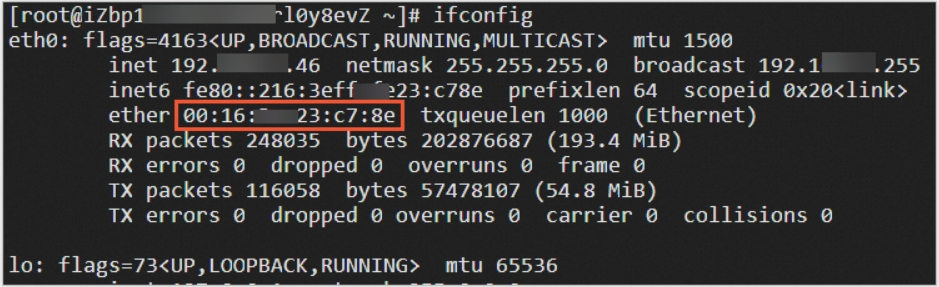
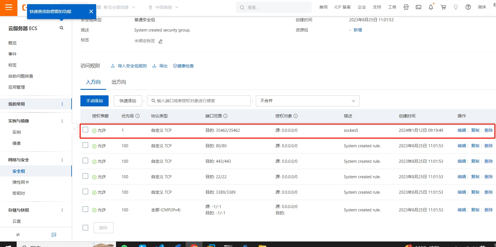

1. Ceph
基于 Centos-stream-9
1.1. 搭建Ceph Cluster
Ceph Cluster包含三个虚拟机：ceph1 ceph2 ceph3
ceph1 ceph2 ceph3上进行以下操作
dnf install -y epel-release
dnf install -y systemd-timesyncd
systemctl enable systemd-timesyncd --now
rpm -Uvh https://download.ceph.com/rpm-18.1.3/el9/noarch/ceph-release-1-1.el9.noarch.rpm
dnf install -y cephadm podman
dnf install -y centos-release-ceph-pacificceph1进行以下操作
cephadm bootstrap --mon-ip 192.168.122.60| 终端输出如下内容,注意保存Password |
https://192.168.122.60:8443/
User: admin
Password: 65eoa3cblm然后继续执行如下命令
cephadm shell
cephadm add-repo --release quincy
dnf install ceph-common如果已经对下载cephadm的路径换了源，可使用
cephadm install ceph-common安装ceph-common
修改下载cephadm的路径
vim /etc/yum.repos.d/ceph.repoCN: China: http://mirrors.ustc.edu.cn/ceph/
查看ceph版本号和状态
ceph -v
ceph status设置ceph1能无密码登陆ceph1 ceph2 ceph3
ceph cephadm get-pub-key > ~/ceph.pub
ssh-copy-id -f -i ~/ceph.pub root@ceph1
ssh-copy-id -f -i ~/ceph.pub root@ceph2
ssh-copy-id -f -i ~/ceph.pub root@ceph3添加ceph1 ceph2 ceph3到cluster
cephadm shell -- ceph orch host add ceph1 192.168.122.60
cephadm shell -- ceph orch host add ceph2 192.168.122.61
cephadm shell -- ceph orch host add ceph3 192.168.122.62给ceph1 ceph2 ceph3打label
cephadm shell -- ceph orch host label add ceph1 mon
cephadm shell -- ceph orch host label add ceph2 mon
cephadm shell -- ceph orch host label add ceph3 mon添加osd
cephadm shell -- ceph orch daemon add osd ceph1:/dev/vdb
cephadm shell -- ceph orch daemon add osd ceph2:/dev/vdb
cephadm shell -- ceph orch daemon add osd ceph3:/dev/vdb1.2. 部署CephFS
参照官网链接 https://docs.ceph.com/en/latest/cephadm/services/mds/#orchestrator-cli-cephfs 在ceph1上执行以下命令
ceph fs volume create geek_cephfs --placement=3
ceph fs ls
ceph fs volume info geek_cephfs
ceph mds stat
ceph orch apply mds geek_cephfs --placement=3[root@ceph1 ~]#
cluster:
id: de382350-3221-11ee-bc03-525400b83c9a
health: HEALTH_OK
services:
mon: 3 daemons, quorum stream960,stream961,stream962 (age 9m)
mgr: stream960.vperxy(active, since 52m), standbys: stream961.ldsnmd
mds: 1/1 daemons up, 2 standby
osd: 3 osds: 3 up (since 8m), 3 in (since 9m)
data:
volumes: 1/1 healthy
pools: 3 pools, 49 pgs
objects: 24 objects, 451 KiB
usage: 81 MiB used, 90 GiB / 90 GiB avail
pgs: 49 active+clean
| 使用cat /etc/ceph/ceph.client.admin.keyring查看key，用于挂载cephFS |
# [root@stream960 ~]# cat /etc/cat /etc/ceph/ceph.client.admin.keyringceph/ceph.client.admin.keyring # [client.admin] # key = AQCZ4ctks3nnHxAAgGpIFheYkpdCoBERg98x3g== # caps mds = "allow *" # caps mgr = "allow *" # caps mon = "allow *" # caps osd = "allow *"
在任何主机上执行以下命令
mkdir -p /mnt/ceph
mount -t ceph 192.168.122.60:6789,192.168.122.61:6789,192.168.122.62:6789:/ /mnt/ceph -o name=admin,secret=AQCZ4ctks3nnHxAAgGpIFheYkpdCoBERg98x3g==1.3. 部署CephRWG
安装ceph-radosgw
sudo yum install -y ceph-radosgw1.3.1. 打标签
主要作用是根据标签决定rgw运行在那些机器上
ceph orch host label add ceph1 rgw
ceph orch host label add ceph2 rgw
ceph orch host label add ceph3 rgw启动rgw
ceph orch apply rgw test_rgw default --placement=label:rgw --port=8000curl测试连接rgw服务 查看域信息
radosgw-admin zone get --rgw-zone=default
连接
[source, bash]
curl http://ceph1:8000安装s3cmd
apt install -y ceph-common s3cmd创建用户 [Note]注意保存access_key和secret_key值
radosgw-admin user create --uid=xy --display-name=administrator --email=xy@xy.com1.3.2. 使用S3
s3cmd --configure
# 输入access_key
KUJSQNRB5QCGGOHMB6I0
# 输入secret_key
ai4zduUFCjC83JJ4E6GqaWHFHCmsOp14qptCfZaE
# 输入域()
default
# 输入rgw访问接口
storage02:8000
# 连接存储桶域名
storage02
# 输入密码，没有加密。回车
回车
# 有没有gpg目录，安装s3服务就会有
回车
# 是否用https
No
# 是否有代理
回车
# 测试连通性，返回success代表成功
y
# 是否保存
y创建存储桶测试
s3cmd mb s3://bucket1
查看存储桶
[source, bash]
s3cmd ls1.3.3. 使用swift
yum install python-swiftclient
创建用户
[source, bash]
radosgw-admin user create --uid="testuser" --display-name="First User"创建子用户
radosgw-admin subuser create --uid=testuser --subuser=testuser:swift --access=fullswift常用命令
swift -A http://192.168.122.106:8000/auth/1.0 -U czhswift:swift -K AquvhRPHOom3S5dWLjyJYZwOwYKUz11EiSikZqgG post swiftbucket
swift -A http://192.168.122.106:8000/auth/1.0 -U czhswift:swift -K AquvhRPHOom3S5dWLjyJYZwOwYKUz11EiSikZqgG delete swiftbucket
swift -A http://192.168.122.106:8000/auth/1.0 -U czhswift:swift -K AquvhRPHOom3S5dWLjyJYZwOwYKUz11EiSikZqgG list
swift -A http://192.168.122.106:8000/auth/1.0 -U czhswift:swift -K AquvhRPHOom3S5dWLjyJYZwOwYKUz11EiSikZqgG list swiftbucket
swift -A http://192.168.122.106:8000/auth/1.0 -U czhswift:swift -K AquvhRPHOom3S5dWLjyJYZwOwYKUz11EiSikZqgG stat
swift -A http://192.168.122.106:8000/auth/1.0 -U czhswift:swift -K AquvhRPHOom3S5dWLjyJYZwOwYKUz11EiSikZqgG upload swiftbucket 1.txt
swift -A http://192.168.122.106:8000/auth/1.0 -U czhswift:swift -K AquvhRPHOom3S5dWLjyJYZwOwYKUz11EiSikZqgG delete swiftbucket 1.txt2. Git
2.1. 在服务器上搭建Git
在开始架设 Git 服务器前，需要把现有仓库导出为裸仓库——即一个不包含当前工作目录的仓库。 这通常是很简单的。 为了通过克隆你的仓库来创建一个新的裸仓库，你需要在克隆命令后加上 --bare 选项。 按照惯例，裸仓库的目录名以 .git 结尾，就像这样： 通常有两种办法：
从已有仓库克隆，或者创建dir,初始化为空仓库
2.1.1. 从已有仓库克隆
$ git clone --bare my_project my_project.git
Cloning into bare repository 'my_project.git'...
done.2.1.2. 创建dir,初始化为空仓库
在某一个路径下，创建一个目录
mkdir my_project.git
进入该目录
[source, bash]
cd my_project.git
初始化这个目录，使其成为一个空仓库
[source, bash]
git init --bare --shared2.1.3. 用户clone/push
on John’s computer
$ cd myproject
$ git init
$ git add .
$ git commit -m 'initial commit'
$ git remote add origin git@gitserver:/srv/git/project.git
$ git push origin master此时，其他开发者可以克隆此仓库，并推回各自的改动，步骤很简单：
$ git clone git@gitserver:/srv/git/project.git
$ cd project
$ vim README
$ git commit -am 'fix for the README file'
$ git push origin master3. GitLab
3.1. 新增GitLab Yum仓库
3.1.1. 添加Yum仓库
curl https://packages.gitlab.com/install/repositories/gitlab/gitlab-ce/script.rpm.sh | bash3.1.2. 列出GitLab的仓库列表
执行一下命令
yum repolist all | grep gitlab终端输出
gitlab_gitlab-ce/x86_64 gitlab_gitlab-ce enabled: 853 !gitlab_gitlab-ce-source gitlab_gitlab-ce-source disabled
3.1.3. 查看可用的GitLab软件包
列出软件包列表
yum repo-pkgs gitlab_gitlab-ce list终端输出
Loaded plugins: fastestmirror Loading mirror speeds from cached hostfile * base: mirrors.bfsu.edu.cn * extras: mirrors.bfsu.edu.cn * updates: mirrors.cqu.edu.cn Available Packages gitlab-ce.x86_64 15.7.3-ce.0.el7 gitlab_gitlab-ce
查看软件包描述
yum --disablerepo=\* --enablerepo=gitlab_gitlab-ce info gitlab-ceLoaded plugins: fastestmirror Loading mirror speeds from cached hostfile * base: mirrors.bfsu.edu.cn * extras: mirrors.bfsu.edu.cn * updates: mirrors.cqu.edu.cn Available Packages Name : gitlab-ce Arch : x86_64 Version : 15.7.3 Release : ce.0.el7 Size : 1.1 G Repo : gitlab_gitlab-ce/x86_64 Summary : GitLab Community Edition (including NGINX, Postgres, Redis) URL : https://about.gitlab.com/ License : MIT Description : GitLab Community Edition (including NGINX, Postgres, Redis)
GitLab的软件包比较大，安装过程时间较长
3.1.4. 默认禁用GitLab仓库
按需单独启用GitLab仓库 GitLab仓库（服务器位于国外）经常无法访问或者速度慢，影响Yum使用，默认禁用之
yum-config-manager --disable gitlab_gitlab-ce | egrep '(\[gitlab_gitlab-ce\])|enabled'终端输出
#[gitlab_gitlab-ce] #enabled = 0 或 False
3.2. 安装GitLab软件包
3.2.1. 安装GitLab依赖
运行 gitlab-ctl 命令时，会出现警告：
终端输出
ffi-libarchive could not be loaded, libarchive is probably not installed on system, archive_file will not be available
安装 libarchive 包，消除警告：
yum install -y libarchive3.2.2. 预设GitLab运行参数
预设GitLab访问URL
EXTERNAL_URL="http://gitlab.sjx.com:8181"预设GitLab默认密码
GITLAB_ROOT_PASSWORD=$(pwgen -s 20|head -n 1)
echo -e "GitLab默认用户：root\nGitLab默认密码：${GITLAB_ROOT_PASSWORD}"终端输出
GitLab默认用户：root GitLab默认密码：QJQCM3fAFXKYpYUeSL5e
预设GitLab访问域名
egrep '^127.0.0.1 gitlab.sjx.com$' /etc/hosts > /dev/null || echo '127.0.0.1 gitlab.sjx.com' >> /etc/hosts127.0.0.1 gitlab.sjx.com 只为安装，无其它实质作用 域名 gitlab.sjx.com 必须能解析出IP地址，EXTERNAL_URL参数才有效 这样安装后，不再需要手动修改 /etc/gitlab/gitlab.rb 文件中的 external_url 参数
3.2.3. 手动安装GitLab
打印GitLab软件包URL
GITLAB_RPM_URL=$(yumdownloader --disablerepo=\* --enablerepo=gitlab_gitlab-ce --urls gitlab-ce | egrep '^https://.+\.rpm$')
GITLAB_RPM_FILE=/tmp/$(basename ${GITLAB_RPM_URL})
echo -e "GitLab软件包文件：\n\t${GITLAB_RPM_FILE}\n GitLab软件包URL：\n\t${GITLAB_RPM_URL}"终端输出
GitLab软件包文件： /tmp/gitlab-ce-15.7.3-ce.0.el7.x86_64.rpm GitLab软件包URL： https://packages.gitlab.com/gitlab/gitlab-ce/el/7/x86_64/gitlab-ce-15.7.3-ce.0.el7.x86_64.rpm
下载软件包
wget -c ${GITLAB_RPM_URL} -O ${GITLAB_RPM_FILE}| wget 因为带了 -c 参数，下载速度慢时，可以中断下载，多次重新运行上面的命令 |
安装GitLab
EXTERNAL_URL=${EXTERNAL_URL} GITLAB_ROOT_PASSWORD=${GITLAB_ROOT_PASSWORD} yum install -y ${GITLAB_RPM_FILE}| GitLab安装成功后，请手动删除下载的文件：rm -f /tmp/gitlab-ce*.rpm |
（安装时，终端输出类似 网络安装GitLab）
终端输出
Loaded plugins: fastestmirror Examining /tmp/gitlab-ce-15.6.3-ce.0.el7.x86_64.rpm: gitlab-ce-15.6.3-ce.0.el7.x86_64 Marking /tmp/gitlab-ce-15.6.3-ce.0.el7.x86_64.rpm to be installed Resolving Dependencies --> Running transaction check ---> Package gitlab-ce.x86_64 0:15.6.3-ce.0.el7 will be installed --> Finished Dependency Resolution Dependencies Resolved ============================================================================================== Package Arch Version Repository Size ============================================================================================== Installing: gitlab-ce x86_64 15.6.3-ce.0.el7 /gitlab-ce-15.6.3-ce.0.el7.x86_64 2.4 G Transaction Summary ============================================================================================== Install 1 Package Total size: 2.4 G Installed size: 2.4 G ...内容同上... ...内容同上... ...内容同上...
3.3. 查看GitLab服务状态
3.3.1. 查看GitLab的系统服务状态
systemctl status gitlab-runsvdir终端输出
● gitlab-runsvdir.service - GitLab Runit supervision process
Loaded: loaded (/usr/lib/systemd/system/gitlab-runsvdir.service; enabled; vendor preset: disabled)
Active: active (running) since Sat 2023-01-14 00:30:42 CST; 11h ago
Main PID: 10912 (runsvdir)
CGroup: /system.slice/gitlab-runsvdir.service
├─10912 runsvdir -P /opt/gitlab/service log: .............................................
├─10914 runsv logrotate
├─10924 svlogd -tt /var/log/gitlab/logrotate
├─10930 runsv redis
├─10932 /opt/gitlab/embedded/bin/redis-server unixsocket:/var/opt/gitlab/redis/redis.socket
├─10940 svlogd -tt /var/log/gitlab/redis
├─10950 runsv gitaly
├─10975 svlogd /var/log/gitlab/gitaly
├─11079 runsv postgresql
...省略的内容...
...省略的内容...
...省略的内容...
Jan 14 00:30:42 lan_server systemd[1]: Started GitLab Runit supervision process.
3.3.2. 查看GitLab的所有组件状态
gitlab-ctl status终端输出
run: alertmanager: (pid 11869) 39866s; run: log: (pid 11659) 39907s run: gitaly: (pid 11728) 39876s; run: log: (pid 10975) 40076s run: gitlab-exporter: (pid 11845) 39868s; run: log: (pid 11451) 39925s run: gitlab-kas: (pid 11817) 39870s; run: log: (pid 11225) 40017s run: gitlab-workhorse: (pid 11829) 39869s; run: log: (pid 11371) 39942s run: logrotate: (pid 25010) 488s; run: log: (pid 10924) 40088s run: nginx: (pid 11399) 39940s; run: log: (pid 11415) 39938s run: node-exporter: (pid 11839) 39869s; run: log: (pid 11443) 39931s run: postgres-exporter: (pid 11879) 39866s; run: log: (pid 11682) 39903s run: postgresql: (pid 11081) 40037s; run: log: (pid 11125) 40034s run: prometheus: (pid 11854) 39867s; run: log: (pid 11630) 39914s run: puma: (pid 11287) 39958s; run: log: (pid 11294) 39957s run: redis: (pid 10932) 40084s; run: log: (pid 10940) 40082s run: redis-exporter: (pid 11847) 39868s; run: log: (pid 11469) 39919s run: sidekiq: (pid 11303) 39952s; run: log: (pid 11320) 39950s
3.3.3. 查看GitLab默认HTTP端口
gitlab-ctl show-config 2>/dev/null | grep '"external-url":'终端输出
"external-url": "http://gitlab.sjx.com:8181",
GitLab访问URL：http://gitlab.sjx.com:8181
3.4. 为GitLab新增防火墙规则
1.增加防火墙放行规则
GITLAB_PORT=8181
PERM="--permanent"
SERV_NAME=GITLAB_${GITLAB_PORT}
SERV="${PERM} --service=${SERV_NAME}"
firewall-cmd ${PERM} --new-service=${SERV_NAME}
firewall-cmd ${SERV} --set-short="GitLab ports"
firewall-cmd ${SERV} --set-description="GitLab port exceptions"
firewall-cmd ${SERV} --add-port=${GITLAB_PORT}/tcp
firewall-cmd ${PERM} --add-service=${SERV_NAME}GITLAB_PORT GITLAB运行端口注意和 预设GitLab访问URL 的端口保持一致
2.重载防火墙配置
firewall-cmd --reload3.查看防火墙规则
firewall-cmd --list-allpublic (active) target: default icmp-block-inversion: no interfaces: enp0s3 sources: services: GITLAB_8181 dhcpv6-client ssh ports: protocols: masquerade: no forward-ports: source-ports: icmp-blocks: rich rules:
放行的规则中必须有 GITLAB_8181 服务 现在，可以去试一试 第一次访问GitLab Web 访问 http://gitlab.sjx.com:8181 ，完成第一次登录操作
4. Jenkins
4.1. 新增Jenkins Yum仓库
4.1.1. 下载仓库文件
sudo wget --inet4-only \
-O /etc/yum.repos.d/jenkins.repo \
https://pkg.jenkins.io/redhat-stable/jenkins.repo| wget参数说明 --inet4-only 表示仅使用IPv4下载文件。pkg.jenkins.io 使用了IPv6解析域名，可能导致下载失败 -O 下载文件保存到指定位置 |
4.1.2. 导入仓库密钥
导入密钥
sudo rpm --import https://pkg.jenkins.io/redhat-stable/jenkins.io-2023.key更新缓存
sudo yum upgrade4.1.3. 默认禁用Jenkins仓库
按需单独启用Jenkins仓库
Jenkins仓库（服务器位于国外）经常无法访问或者速度慢，影响Yum使用，默认禁用之
yum-config-manager --disable jenkins | egrep '(\[jenkins\])|enabled'终端输出
[jenkins] enabled = 0 或 False
4.2. 安装Jenkins软件包
4.2.1. 安装依赖
1.安装Java11
sudo yum install fontconfig java-17-openjdk2.查看默认Java版本
java -versionopenjdk version "17.0.6" 2023-01-17 LTS OpenJDK Runtime Environment (Red_Hat-17.0.6.0.10-3.el9) (build 17.0.6+10-LTS) OpenJDK 64-Bit Server VM (Red_Hat-17.0.6.0.10-3.el9) (build 17.0.6+10-LTS, mixed mode, sharing)
4.2.2. 安装Jenkins
yum --disablerepo=\* --enablerepo=jenkins install -y jenkins重新加载系统管理守护进程 (systemd) 的配置文件
sudo systemctl daemon-reload4.3. 配置Jenkins服务
4.3.1. 开机启动Jenkins
sudo systemctl enable jenkins
sudo systemctl start jenkins
sudo systemctl status jenkins2.重载Systemd配置
systemctl daemon-reload4.4. 为Jenkins新增防火墙规则
1.增加防火墙放行规则
YOURPORT=8080
PERM="--permanent"
SERV="$PERM --service=jenkins"
firewall-cmd $PERM --new-service=jenkins
firewall-cmd $SERV --set-short="Jenkins ports"
firewall-cmd $SERV --set-description="Jenkins port exceptions"
firewall-cmd $SERV --add-port=$YOURPORT/tcp
firewall-cmd $PERM --add-service=jenkins
firewall-cmd --zone=public --add-service=http --permanentYOURPORT
Jenkins运行端口注意和 设置Jenkins启动参数 保持一致
2.重载防火墙配置
firewall-cmd --reload5. ssh
5.1. 无密码登录
#生成不带密码的密钥对
ssh-keygen -N "" -f ~/.ssh/mk
#上传公钥文件到远程主机
ssh-copy-id -i ~/.ssh/mk.pub root@192.168.2.236
#在本地Linux终端中配置私钥
cat << EOF >> ~/.ssh/config
Host 192.168.2.236
IdentityFile ~/.ssh/mk
EOF| 如果是在gitlab中添加ssh公钥，则在克隆时必须在本地添加域名解析 |
5.2. ssh密钥对克隆git仓库
mkdir -p ~/.ssh
#一路回车直到生成
ssh-keygen -t rsa -b 4096 -C "chengzenghuan2018@gmail.com" -f ~/.ssh/keyname- 参数说明
-
-
-t rsa 指定密钥对类型为RSA，
-
-b 4096 指定密钥长度为4096位，
-
-C "chengzenghuan@github.com" 注释该密钥对相关联的电子邮件地址（公钥文件末尾会出现该注释）
-
-f ~/.ssh/keyname 指定密钥文件的名称和路径。
-
-N "" 指定空密码
-
| 将公钥keyname.pub添加到github后再执行之后的操作 |
cat <<EOF >> ~/.ssh/config
Host github.com
HostName github.com
User git
IdentityFile ~/.ssh/keyname
IdentitiesOnly yes
EOF
#测试是否成功添加
ssh -T git@github.comHi xxxxx! You've successfully authenticated, but GitHub does not provide shell access.
|
如果报错： ssh: connect to host github.com port 22: Connection refused 则使用GitHub的443端口————执行以下命令以更改~/.ssh/config文件： 再次测试是否成功添加 成功后，终端输出 Hi xxxxx! You've successfully authenticated, but GitHub does not provide shell access. |
5.3. cmd无法识别ssh
-
操作系统：Windows10
配置环境变量时，误操作导致cmd中无法使用ssh命令
添加环境变量即可解决。
此电脑→右键→属性→关于→高级系统设置→高级→环境变量
在系统变量Path中添加 C:\Windows\System32\OpenSSH;
添加前：%JAVA_HOME%\bin;%JAVA_HOME%\jre\bin;
添加后：%JAVA_HOME%\bin;%JAVA_HOME%\jre\bin;
C:\Windows\System32\OpenSSH;
6. prometheus
6.1. Prometheus
Reference： https://prometheus.io/docs/prometheus/latest/getting_started/#starting-up-some-sample-targets
cd ~
wget https://github.com/prometheus/prometheus/releases/download/v2.49.1/prometheus-2.49.1.linux-amd64.tar.gz
tar -zxvf prometheus-2.49.1.linux-amd64.tar.gz -C /opt/
cd /opt/prometheus-*执行下面命令检测是否可以正常使用
./prometheus --help在本quick start中省略不做，若有需要请查看 官方教程
./prometheus --config.file=prometheus.yml#重载prometheus配置文件
kill -s SIGHUP `pgrep -f prometheus`
#关闭prometheus
kill -s SIGTERM `pgrep -f prometheus`6.2. prometheus-systemctl
将prometheus添加到系统服务,便于用systemctl管理
cat <<EOF >/usr/lib/systemd/system/prometheus.service
[Unit]
Description = Prometheus server daemon
[Service]
Type = simple
WorkingDirectory = /opt/prometheus-2.49.1.linux-amd64
ExecStart = /opt/prometheus-2.49.1.linux-amd64/prometheus --config.file=/opt/prometheus-2.49.1.linux-amd64/prometheus.yml
ExecStop = /bin/kill -s SIGTERM $MAINPID
ExecReload = /bin/kill -s SIGHUP $MAINPID
[Install]
WantedBy=multi-user.target
EOF# 重载systemd管理器配置
sudo systemctl daemon-reload
sudo systemctl start prometheus.service
sudo systemctl enable prometheus.service
sudo systemctl reload prometheus.service6.3. node_exporter
node_exporter手动下载地址： https://prometheus.io/download/#node_exporter
cd ~
wget https://github.com/prometheus/node_exporter/releases/download/v1.7.0/node_exporter-1.7.0.linux-amd64.tar.gz
tar -xzvf node_exporter-*.*.tar.gz -C /opt/
cd /opt/node_exporter-*.*cd ~
mkdir -p prometheus-tls
cd prometheus-tls
openssl req -new -newkey rsa:2048 -days 365 -nodes -x509 -keyout node_exporter.key -out node_exporter.crt -subj "/C=CN/ST=Beijing/L=Beijing/O=Moelove.info/CN=localhost" -addext "subjectAltName = DNS:githubio"
cp * /opt/node_exporter-*.*cat <<EOF >/opt/node_exporter-1.7.0.linux-amd64/config.yaml
tls_server_config:
cert_file: node_exporter.crt
key_file: node_exporter.key
EOFcd /opt/node_exporter-*.*
./node_exporter --web.config.file=config.yaml...... ...... ts=2024-01-31T09:01:28.677Z caller=node_exporter.go:117 level=info collector=xfs ts=2024-01-31T09:01:28.677Z caller=node_exporter.go:117 level=info collector=zfs ts=2024-01-31T09:01:28.677Z caller=tls_config.go:274 level=info msg="Listening on" address=127.0.0.1:9101 ts=2024-01-31T09:01:28.677Z caller=tls_config.go:310 level=info msg="TLS is enabled." http2=true address=127.0.0.1:9100
6.4. node_exporter-systemctl
Ctrl-C 停止程序，将node_exporter添加到系统服务,便于用systemctl管理
cat << EOF > /usr/lib/systemd/system/node_exporter.service
[Unit]
Description = node_exporter server daemon
[Service]
Type = simple
ExecStart = /opt/node_exporter-1.7.0.linux-amd64/node_exporter --web.config.file=/opt/node_exporter-1.7.0.linux-amd64/config.yaml
[Install]
WantedBy=multi-user.target
EOF# 重载systemd管理器配置
sudo systemctl daemon-reload
sudo systemctl start node_exporter
sudo systemctl enable node_exporter
sudo systemctl status node_exporter6.5. Prometheus获取node_exporter数据
添加上上步node_exporter生成的node_exporter.crt到prometheus所在目录
-
在prometheus主机上操作
cat <<EOF >>/etc/hosts
xxx.xxx.xxx.xxx githubio
EOFscp root@node_exporter:~/prometheus-tls/node_exporter.crt /opt/prometheus-2.49.1.linux-amd64| 设置域名解析必须做，否则会无法获取node_exporter信息 |
添加以下配置信息到/opt/prometheus-2.49.1.linux-amd64/prometheus.yml
cat <<EOF> /opt/prometheus-2.49.1.linux-amd64/prometheus.yml
global:
scrape_interval: 15s # By default, scrape targets every 15 seconds.
# Attach these labels to any time series or alerts when communicating with
# external systems (federation, remote storage, Alertmanager).
external_labels:
monitor: 'codelab-monitor'
# A scrape configuration containing exactly one endpoint to scrape:
# Here it's Prometheus itself.
scrape_configs:
# The job name is added as a label 'job=<job_name>' to any timeseries scraped from this config.
- job_name: 'prometheus'
# Override the global default and scrape targets from this job every 5 seconds.
scrape_interval: 5s
static_configs:
- targets: ['localhost:9090']
- job_name: 'node_exporter'
scheme: https
tls_config:
ca_file: node_exporter.crt
static_configs:
- targets: ['githubio:9100']
EOF- job_name: 'node_exporter'
scheme: https
tls_config:
ca_file: node_exporter.crt
static_configs:
- targets: ['githubio:9100']
- targets: ['githubio:9100'] 这里必须使用前面配置好的域名 githubio，不能用ip
|
sudo systemctl reload prometheus.service访问 http://部署prometheus的主机Ip:9090/ Status→Targets
6.6. prometheusSql
#cpu使用率
(1 - sum(rate(node_cpu_seconds_total{mode="idle"}[1m])) by (instance) / sum(rate(node_cpu_seconds_total[1m])) by (instance) ) * 100
#内存占用大小
node_memory_MemTotal_bytes{instance="githubio:9100", job="node_exporter-githubio"} - node_memory_MemFree_bytes{instance="githubio:9100", job="node_exporter-githubio"} - node_memory_Cached_bytes{instance="githubio:9100", job="node_exporter-githubio"} - node_memory_Buffers_bytes{instance="githubio:9100", job="node_exporter-githubio"}
#硬盘占用情况
node_filesystem_size_bytes{instance="githubio:9100", job="node_exporter-githubio", device!~"vmhgfs-fuse"} - node_filesystem_avail_bytes{instance="githubio:9100", job="node_exporter-githubio"}6.7. 安装mysql exporter
wget https://github.com/prometheus/mysqld_exporter/releases/download/v0.15.0/mysqld_exporter-0.15.0.linux-amd64.tar.gz
tar xvfz mysqld_exporter-0.15.0.linux-amd64.tar.gz[pr@zabbix Download]$ ls mysqld_exporter-0.15.0.linux-amd64 prometheus-2.46.0.linux-amd64 mysqld_exporter-0.15.0.linux-amd64.tar.gz prometheus-2.46.0.linux-amd64.tar.gz
cd mysqld_exporter-0.15.0.linux-amd64root登陆数据库
mysql -uroot -ppassword创建用户
#更改密码策略，否则简单密码password不可用
mysql>SET GLOBAL validate_password.policy = 0;
mysql>CREATE USER 'exporter'@'localhost' IDENTIFIED BY 'password' WITH MAX_USER_CONNECTIONS 3;
mysql>GRANT PROCESS, REPLICATION CLIENT, SELECT ON *.* TO 'exporter'@'localhost';
mysql>quit;创建编辑文件.my.cnf
echo << EOF > .my.cnf
[client]
user=exporter
password=password
EOF进入prometheus-2.46.0.linux-amd64目录下
cd prometheus-2.46.0.linux-amd64/echo << EOF >> prometheus.yml
- job_name: "mysqld"
static_configs:
- targets: ["localhost:9104"]
EOF
./mysqld_exporter --config.my-cnf=.my.cnf7. Zabbix
7.1. 选择Zabbix服务器的平台
选择zabbix服务器平台以获得对应的rpm包
| 选择的服务器平台不同，操作也会不同，本教程选择如下 |
7.2. 安装配置zabbix
| 如果你安装了EPEL，则需要禁用EPEL提供的zabbix包 |
编辑配置文件 /etc/yum.repos.d/epel.repo
vim /etc/yum.repos.d/epel.repo然后添加下列内容
[epel] ... excludepkgs=zabbix*
1.安装zabbix仓库
rpm -Uvh https://repo.zabbix.com/zabbix/6.4/rhel/9/x86_64/zabbix-release-6.4-1.el9.noarch.rpm
dnf clean all2.安装Zabbix server，Web前端，agent
dnf install zabbix-server-mysql zabbix-web-mysql zabbix-apache-conf zabbix-sql-scripts zabbix-selinux-policy zabbix-agent3.创建初始数据库 需要确保有数据库服务已启动并运行 在数据库主机上运行以下代码。
mysql -uroot -p
password
mysql> SET GLOBAL validate_password.policy = 0;
mysql> create database zabbix character set utf8mb4 collate utf8mb4_bin;
mysql> create user zabbix@localhost identified by 'password';
mysql> grant all privileges on zabbix.* to zabbix@localhost;
mysql> set global log_bin_trust_function_creators = 1;
mysql> quit;导入初始架构和数据，系统将提示您输入新创建的密码。
zcat /usr/share/zabbix-sql-scripts/mysql/server.sql.gz | mysql --default-character-set=utf8mb4 -uzabbix -p zabbix在导入数据库模式后禁用日志bin信任功能创建者选项。
mysql -uroot -p
password
mysql> set global log_bin_trust_function_creators = 0;
mysql> quit;4.为Zabbix server配置数据库 编辑配置文件 /etc/zabbix/zabbix_server.conf
vim /etc/zabbix/zabbix_server.confDBPassword=password
5.启动Zabbix server和agent进程 启动Zabbix server和agent进程，并为它们设置开机自启：
systemctl restart zabbix-server zabbix-agent httpd php-fpm
systemctl enable zabbix-server zabbix-agent httpd php-fpm6.打开zabbix的web UI 使用Apache web server时，Zabbix UI的默认URL是 http://host/zabbix
7.3. 快速开始
1.登录和配置用户
概览：
本章节你将学会如何登录和设立Zabbix中的系统用户
输入以下用户名和密码登录为Zabbix超级用户
用户名：Admin 密码：zabbix
最后进入zabbix首页
7.4. Zabbix+Mysql
7.4.1. Overview
该template的设计是为了让Zabbix通过Zabbix agent监控MySQL更简单 ，不需要其他任何插件就可以实现
7.4.2. Requirements
Zabbix version: 6.4 and higher.
7.4.3. Tested versions
该template 测试在：
-
mysql Ver 8.0.34
-
Zabbix version: 6.4
7.4.4. Setup
2.复制userparameter_mysql.conf到另一个目录下并改名为template_db_mysql.conf
cp /usr/share/doc/zabbix-agent/userparameter_mysql.conf /etc/zabbix/zabbix_agentd.d/template_db_mysql.conf3.重启Zabbix agent
systemctl restart zabbix-agent4.创建一个MySQL user用于监控
mysql>CREATE USER 'zbx_monitor'@'%' IDENTIFIED BY 'password';
mysql>GRANT REPLICATION CLIENT,PROCESS,SHOW DATABASES,SHOW VIEW ON *.* TO 'zbx_monitor'@'%';5.创建/var/lib/zabbix/.my.cnf
mkdir /var/lib/zabbix
cat << EOF >/var/lib/zabbix/.my.cnf
[client]
user='zbx_monitor'
password='password'
EOF7.4.5. Start
进入zabbix主页 http://host/zabbix
左侧菜单栏→monitoring→Hosts→Create host
→update
创建完成后如图,有名为mysql的host
点击该主机名，查看详细数据，点击item
8. zhiyan-mod-letsencrypt
8.1. 配置zhiyan-mod-letsencrypt
cd /home/czh/workspace/github
git clone ssh://git@git.cdgeekcamp.com:4295/zhiyanmodule/zhiyan-mod-letsencrypt.git
cd zhiyan-mod-letsencrypt
pycharm .将conf文件下的letsencrypt.conf.sample复制一份并改名为letsencrypt.conf，并参照以下提示进行更改 找到下面参数：
1.将
dry_run = no改为
dry_run = yes2.将
language_file=/opt/gc/zy/etc/language/zh_CN/letsencrypt.json改为
language_file=/home/czh/workspace/github/zhiyan-mod-letsencrypt/language/zh_CN/letsencrypt.json将该文件中的所有
level = INFO改为
level = TRACE将需要分析的log文件保存到本地的/var/log/letsencrypt/下(需要分析的log文件通常在服务器的/var/log/letsencrypt目录下)
mkdir -p /var/log/letsencrypt/
scp root@8.210.45.121:/var/log/letsencrypt/letsencrypt.log /var/log/letsencrypt/将已完成证书签发的服务器上的/etc/letsencrypt目录保存到本地的/etc/letsencrypt
scp -r root@8.210.45.121:/etc/letsencrypt /etc/letsencrypt8.2. 安装zySDK
1.克隆所需的项目
cd /home/czh/workspace/github
git clone ssh://git@git.cdgeekcamp.com:4295/zhiyan/libzygrpc.git
git clone ssh://git@git.cdgeekcamp.com:4295/zhiyan/libzymod-python.git2.进入libzymod-python目录进行以下操作
cd /home/czh/workspace/github/libzymod-python/
git checkout dev
git pull origin dev
sh build.sh
cd dist/
pip install zymod-0.0.2.3-py3-none-any.whl3.安装以下版本的依赖
pip install grpcio==1.57.0
pip install grpcio-tools==1.57.0
pip install protobuf==4.21.12
pip install setuptool==68.0.0| setuptool可以使用更低版本如 |
4.在libzygrpc目录下进行以下操作
cd /home/czh/workspace/github/libzygrpc/
git checkout dev
git pull origin dev
cd python/
sh build.sh
cd dist/
pip install zygrpc-0.0.1.15-py3-none-any.whl现在准备好了所有环境，回到pycharm查看是否还有依赖不存在的问题，没有报错后，回到zhiyan-mod-letsencrypt目录下继续操作
cd /home/czh/workspace/github/zhiyan-mod-letsencrypt
python zymod_letsencrypt.py -c /home/czh/workspace/github/zhiyan-mod-letsencrypt/conf/letsencrypt.conf[czh@archlinux zhiyan-mod-letsencrypt]$ python zymod_letsencrypt.py -c /home/czh/workspace/github/zhiyan-mod-letsencrypt/conf/letsencrypt.conf
2023-08-28 19:55:45 26872 [INFO] 未启用日志配置文件，加载默认设置
2023-08-28 19:55:45 26872 [INFO] 日志配置文件 '/home/czh/workspace/github/zhiyan-mod-letsencrypt/conf/letsencrypt.conf' 加载成功
2023-08-28 19:55:45 26872 [INFO] 查找自动续签定时任务设置：当前模式->systemd
2023-08-28 19:55:45 26872 [TRACE] Enter function: get_timer_prop
2023-08-28 19:55:45 26872 [TRACE] Enter function: __calc_next_elapse
2023-08-28 19:55:45 26872 [TRACE] input->now_ts=1693223745.7171829
2023-08-28 19:55:45 26872 [TRACE] input->now_monotonic_ts=39455.986456076
2023-08-28 19:55:45 26872 [TRACE] input->next_usec=1693238400000000
2023-08-28 19:55:45 26872 [TRACE] input->next_monotonic_usec=0
2023-08-28 19:55:45 26872 [TRACE] var->next_ts=1693238400.0
2023-08-28 19:55:45 26872 [TRACE] var->next_monotonic_ts=0.0
2023-08-28 19:55:45 26872 [TRACE] output->result=1693238400.0
2023-08-28 19:55:45 26872 [TRACE] Exit function: __calc_next_elapse
2023-08-28 19:55:45 26872 [TRACE] output->result=ZySystemdTimerProp(timer_name='letsencrypt.timer', unit_name='letsencrypt.service', timers_calendar=[('OnCalendar', '*-*-* 00:00:00')], next_elapse=datetime.datetime(2023, 8, 29, 0, 0), last_trigger=datetime.datetime(1970, 1, 1, 8, 0), result='success', persistent=True, wake_system=False)
2023-08-28 19:55:45 26872 [TRACE] Exit function: get_timer_prop
2023-08-28 19:55:45 26872 [TRACE] Enter function: get_last_result_from_log
2023-08-28 19:55:45 26872 [TRACE] input->log_file=/var/log/letsencrypt/letsencrypt.log
2023-08-28 19:55:45 26872 [TRACE] var->_log_file=/var/log/letsencrypt/letsencrypt.log
2023-08-28 19:55:45 26872 [TRACE] var->result=(True, datetime.datetime(2023, 8, 25, 9, 33, 19))
2023-08-28 19:55:45 26872 [TRACE] output->result=(True, datetime.datetime(2023, 8, 25, 9, 33, 19), '/var/log/letsencrypt/letsencrypt.log')
2023-08-28 19:55:45 26872 [TRACE] Exit function: get_last_result_from_log
2023-08-28 19:55:45 26872 [TRACE] var->last_run=1970-01-01 08:00:00
2023-08-28 19:55:45 26872 [TRACE] var->next_running=2023-08-29 00:00:00
2023-08-28 19:55:45 26872 [TRACE] Enter function: mod_send_request_grpc
2023-08-28 19:55:45 26872 [TRACE] var->name=letsencrypt
2023-08-28 19:55:45 26872 [TRACE] var->datetime=2023-08-28 11:55:45.724902+00:00
2023-08-28 19:55:45 26872 [DEBUG] content=
{
"Certificates": [
{
"Certificate": {
"Issued By": {
"Common Name": "R3",
"Organization": "Let's Encrypt",
"Organization Unit": "<未包含在证书中>"
},
"Issued To": {
"Common Name": "*.chengzenghuan.asia",
"Organization": "<未包含在证书中>",
"Organization Unit": "<未包含在证书中>"
},
"Subject Alternative Name": {
"DNS Names": [
"*.chengzenghuan.asia"
]
},
"Validity Period": {
"Expires On": "2023-11-23 05:26:20",
"Issued On": "2023-08-25 05:26:21",
"Time Left": "86天17时30分34秒"
}
},
"Certificate Path": "/etc/letsencrypt/live/chengzenghuan.asia/fullchain.pem",
"Domain": "*.chengzenghuan.asia",
"Private Key Path": "/etc/letsencrypt/live/chengzenghuan.asia/privkey.pem",
"Private Key Type": "ECDSA",
"Root Certificate Path": "/etc/letsencrypt/live/chengzenghuan.asia/chain.pem"
}
],
"CertificatesTitleColName": "Domain",
"RenewalTimerState": {
"Activate": "letsencrypt.service",
"LastRan": "1970-01-01 08:00:00",
"LastRanResult": true,
"Left": "4 h, 4 min, 14 sec",
"NextRunning": "2023-08-29 00:00:00",
"Passed": "19597 days, 11 h, 55 min, 45 sec",
"RenewalLogFile": "/var/log/letsencrypt/letsencrypt.log",
"RenewalResult": true,
"RenewalTime": "2023-08-25 09:33:19",
"SystemTime": "2023-08-28 19:55:45",
"TimerName": "letsencrypt.timer"
}
}
2023-08-28 19:55:45 26872 [INFO] zymod：试运行中，不进行注册.....
2023-08-28 19:55:45 26872 [TRACE] Exit function: mod_send_request_grpc
9. zhiyan-mod-php-fpm
9.1. 克隆 zhiyan-mod-php-fpm、libzygrpc、libzymod-rust
cd /home/czh/workspace/github/ZhiYanModule
git clone ssh://git@git.cdgeekcamp.com:4295/zhiyanmodule/zhiyan-mod-php-fpm.git
cd zhiyan-mod-php-fpm
git checkout dev
git pull origin dev
cd /home/czh/workspace/github/ZhiYan
git clone ssh://git@git.cdgeekcamp.com:4295/zhiyan/libzymod-rust.git
cd libzymod-rust
git checkout dev
git pull origin dev
git clone ssh://git@git.cdgeekcamp.com:4295/zhiyan/libzygrpc.git
cd libzygrpc
git checkout dev
git pull origin dev| 每个项目都要切换分支并拉取最新代码 |
9.1.1. 配置zhiyan-mod-php-fpm
cd /home/czh/workspace/github/ZhiYan
cat << EOF > Cargo.toml
[workspace]
members = ["libzymod-rust"]
exclude = ["libzygrpc", "nginx-access-log-parser", "nginx-error-log-parser"]
[patch]
[patch.crates-io]
[patch.crates-io.libzymod-rust]
path = "/home/czh/workspace/github/ZhiYan/libzymod-rust"
[patch.crates-io.libzygrpc]
path = "/home/czh/workspace/github/ZhiYan/libzygrpc/rust"
EOFcd /home/czh/workspace/github/ZhiYanModule
cat << EOF >Cargo.toml
[workspace]
members = [
"zhiyan-mod-php-fpm",
]
[patch.crates-io]
libzymod-rust = { path = '/home/czh/workspace/github/ZhiYan/libzymod-rust' }
libzygrpc = { path = '/home/czh/workspace/github/ZhiYan/libzygrpc/rust' }
EOF9.2. RUST
| RUST安装与使用参照 此文档 |
9.3. 编译zhiyan-mod-php-fpm并运行
cd /home/czh/workspace/github/ZhiYan/libzygrpc/rust
p cargo build
cd /home/czh/workspace/github/ZhiYan/libzymod-rust
p cargo build
cd /home/czh/workspace/github/ZhiYanModule/zhiyan-mod-php-fpm
p cargo build切换到/home/czh/workspace/github/ZhiYanModule/zhiyan-mod-php-fpm目录,执行以下命令可以得到一个可执行文件
cd /home/czh/workspace/github/ZhiYanModule/zhiyan-mod-php-fpm
cargo runwarning: `zhiyan-mod-php-fpm` (bin "zhiyan-mod-php-fpm") generated 1 warning
Finished dev [unoptimized + debuginfo] target(s) in 0.08s
Running `/home/czh/workspace/github/ZhiYanModule/target/debug/zhiyan-mod-php-fpm`
2023-08-29 19:29:08 30984 [WARN] 检测到日志配置文件'/opt/gc/zy/etc/php-fpm_log.yaml'不存在,将加载默认设置(Level：Debug)
2023-08-29 19:29:08 30984 [ERROR] 检测到智眼模块配置文件'/opt/gc/zy/etc/php-fpm.conf'不存在
可执行文件为
/home/czh/workspace/github/ZhiYanModule/target/debug/zhiyan-mod-php-fpm执行以下命令就可以查看帮助信息
/home/czh/workspace/github/ZhiYanModule/target/debug/zhiyan-mod-php-fpm --help更改zhiyan-mod-php-fpm/conf下的配置文件
cd /home/czh/workspace/github/ZhiYanModule/zhiyan-mod-php-fpm/conf
mv php-fpm.conf.sample php-fpm.conf
mv php-fpm.log.yaml.sample php-fpm.log.yaml1.修改php-fpm.conf文件
vim php-fpm.conf更改以下内容
将
language_file=/opt/gc/zy/etc/language/zh_CN/php-fpm.json
改为
language_file=/home/czh/workspace/github/ZhiYanModule/zhiyan-mod-php-fpm/language/zh_CN/php-fpm.json2.修改php-fpm.log.yaml
vim php-fpm.log.yaml将 level: error 改为 level: trace
mkdir -p /var/log/php
touch /var/log/php/errors.log
chown -R czh:czh /var/log/php/errors.log
cd /home/czh/workspace/github/ZhiYanModule/zhiyan-mod-php-fpm
mkdir var/log
touch var/log/php-fpm.log/php-fpm.log执行
/home/czh/workspace/github/ZhiYanModule/target/debug/zhiyan-mod-php-fpm -c /home/czh/workspace/github/ZhiYanModule/zhiyan-mod-php-fpm/conf/php-fpm.conf -l /home/czh/workspace/github/ZhiYanModule/zhiyan-mod-php-fpm/conf/php-fpm.log.yaml[czh@archlinux php-fpm.d]$ /home/czh/workspace/github/ZhiYanModule/target/debug/zhiyan-mod-php-fpm -c /home/czh/workspace/github/ZhiYanModule/zhiyan-mod-php-fpm/conf/php-fpm.conf -l /home/czh/workspace/github/ZhiYanModule/zhiyan-mod-php-fpm/conf/php-fpm.log.yaml log4rs: error deserializing appender file: Permission denied (os error 13) log4rs: Reference to nonexistent appender: `file` 2023-08-29 19:57:48 32333 [INFO] 日志配置文件'/home/czh/workspace/github/ZhiYanModule/zhiyan-mod-php-fpm/conf/php-fpm.log.yaml'加载成功。 2023-08-29 19:57:48 32333 [INFO] Code:"1",Messages:"phpfpm模块注册失败，Agent连接失败,十秒后进行下一次尝试,Error Message:transport error" 2023-08-29 19:57:58 32333 [INFO] Code:"1",Messages:"phpfpm模块注册失败，Agent连接失败,十秒后进行下一次尝试,Error Message:transport error"
安装配置php-fpm
sudo pacman -Syy
sudo pacman -S extra/php-fpm
systemctl enable php-fpm.service
systemctl start php-fpm.service
systemctl status php-fpm.service
vim /etc/php/php-fpm.d/www.conf删除258行的第一个符号‘；’
255 ; anything, but it may not be a good idea to use the .php extension or it 256 ; may conflict with a real PHP file. 257 ; Default Value: not set 258 ;pm.status_path = /status 259 260 ; The address on which to accept FastCGI status request. This creates a new 261 ; invisible pool that can handle requests independently. This is useful
重启php-fpm.service
systemctl restart php-fpm.service配置nginx
vim /etc/nginx/nginx.conf在文件末尾最后一个}符号的上一行添加如下内容
server {
listen 8023;
server_name _;
root /usr/share/nginx/html;
location ~ ^/status$ {
fastcgi_pass unix://run/php-fpm/php-fpm.sock;
fastcgi_param SCRIPT_FILENAME $document_root$fastcgi_script_name;
include fastcgi_params;
allow 127.0.0.1;
deny all;
}
}
10. grpc+python
10.1. 快速开始
10.1.1. 环境准备
| 以下命令匀在root下执行 |
python -m ensurepip
检查当前Python环境中是否已经安装了pip。如果没有安装，则会自动下载并安装最新版本的pip
|
更新pip版本
python -m pip install --upgrade pip10.1.2. 安装gRPC
python -m pip install grpcio10.1.3. gRPC tools
python -m pip install grpcio-tools10.1.4. 下载example
git clone -b v1.57.0 --depth 1 --shallow-submodules https://github.com/grpc/grpc
cd grpc/examples/python/helloworld10.1.5. 运行 gRPC 应用
进入 examples/python/helloworld 目录
1.运行server
python greeter_server.py[root@gitserver helloworld]# python greeter_server.py Server started, listening on 50051
2.在另一个终端同一目录下运行client
python greeter_client.py[root@gitserver helloworld]# python greeter_client.py Will try to greet world ... Greeter client received: Hello, you!
10.1.6. 更新gRPC service
vim examples/protos/helloworld.proto添加
// Sends another greeting
rpc SayHelloAgain (HelloRequest) returns (HelloReply) {}
到下列文字标识处
// The greeting service definition.
service Greeter {
// Sends a greeting
rpc SayHello (HelloRequest) returns (HelloReply) {}
*添加到此处*
//rpc SayHelloStreamReply (HelloRequest) returns (stream HelloReply) {}
}
添加后变成
// The greeting service definition.
service Greeter {
// Sends a greeting
rpc SayHello (HelloRequest) returns (HelloReply) {}
// Sends another greeting
rpc SayHelloAgain (HelloRequest) returns (HelloReply) {}
//rpc SayHelloStreamReply (HelloRequest) returns (stream HelloReply) {}
}
10.1.7. 生成gRPC代码
进入 examples/python/helloworld 目录，执行下列命令
python -m grpc_tools.protoc -I../../protos --python_out=. --pyi_out=. --grpc_python_out=. ../../protos/helloworld.proto10.1.8. 更新并运行该应用
1.更新server 在相同目录下，编辑greeter_server.py
vim greeter_server.pyclass Greeter(helloworld_pb2_grpc.GreeterServicer):
def SayHello(self, request, context):
return helloworld_pb2.HelloReply(message=f'Hello, {request.name}!')
def SayHelloAgain(self, request, context):
return helloworld_pb2.HelloReply(message=f'Hello again, {request.name}!')
...
在上面代码中，已经添加了下面这段代码
def SayHelloAgain(self, request, context):
return helloworld_pb2.HelloReply(message=f'Hello again, {request.name}!')
2.更新client 在相同目录下，编辑greeter_client.py
vim greeter_client.pydef run():
with grpc.insecure_channel('localhost:50051') as channel:
stub = helloworld_pb2_grpc.GreeterStub(channel)
response = stub.SayHello(helloworld_pb2.HelloRequest(name='you'))
print("Greeter client received: " + response.message)
response = stub.SayHelloAgain(helloworld_pb2.HelloRequest(name='you'))
print("Greeter client received: " + response.message)
上面代码中，已经添加了下面这段代码
response = stub.SayHelloAgain(helloworld_pb2.HelloRequest(name='you'))
print("Greeter client received: " + response.message)
3.运行
到 examples/python/helloworld 这个目录下
(1)运行server
python greeter_server.py[root@gitserver helloworld]# python greeter_server.py Server started, listening on 50051
在另一个终端中的相同目录下
(2)运行client
python greeter_client.py[root@gitserver helloworld]# python greeter_client.py Will try to greet world ... Greeter client received: Hello, you! Greeter client received: Hello again, you!
11. zhiyan-mod-iptables
11.1. zhiyan-mod-iptables
su root
python -m pip install --upgrade pip
pip install python-iptables --break-system-packagespython
>>> import iptc
>>> iptc.easy.dump_chain('filter', 'OUTPUT', ipv6=False)[{'target': 'LIBVIRT_OUT', 'counters': (100462, 12548250)}]
输出nat table
>>> iptc.easy.dump_table('nat', ipv6=False)>>> iptc.easy.dump_table('nat', ipv6=False)
{'PREROUTING': [{'addrtype': {'dst-type': 'LOCAL'}, 'target':
.....
.....
.....
.....
.....
.....
24', 'target': 'MASQUERADE', 'counters': (0, 0)}]}
12. zhiyan
12.1. zhiyan-web-flutter
pacman -S flutter
cd /home/czh/workspace/github/ZhiYanModule
git clone ssh://git@git.cdgeekcamp.com:4295/zhiyan/zhiyan-web-flutter.git
cd zhiyan-web-flutter
git checkout dev
git pull origin dev
flutter build web --release --web-renderer htmlFont asset "CupertinoIcons.ttf" was tree-shaken, reducing it from 283452 to 1272 bytes (99.6% reduction). Tree-shaking can be disabled by providing the --no-tree-shake-icons flag when building your app. Font asset "MaterialIcons-Regular.otf" was tree-shaken, reducing it from 1645184 to 10028 bytes (99.4% reduction). Tree-shaking can be disabled by providing the --no-tree-shake-icons flag when building your app. Compiling lib/main.dart for the Web... 26.4s
cd build/web
python -m http.serverServing HTTP on 0.0.0.0 port 8000 (http://0.0.0.0:8000/) ...
访问链接 http://0.0.0.0:8000/
12.2. zhiyan-web-server
cd /home/czh/workspace/github/ZhiYanModule
git clone ssh://git@git.cdgeekcamp.com:4295/zhiyan/zhiyan-web-server.git
cd zhiyan-web-server
cp src/main/resources/application.properties.sample src/main/resources/application.properties
vim src/main/resources/application.properties更改
spring.datasource.url=jdbc:postgresql://127.0.0.1:5432/zhiyan spring.datasource.username=zy spring.datasource.password=geek
更改
logging.config=/home/czh/workspace/temp/zhiyan-web-server/src/main/resources/logback.xml # 用户头像保存目录 application.config.user-photo-save-dir=/home/czh/workspace/temp/zhiyan-web-server/var/images/avatar
cp src/main/resources/logback.xml.sample src/main/resources/logback.xml
vim src/main/resources/logback.xml更改
<file>/home/czh/workspace/temp/zhiyan-web-server/var/log/web-server.log</file>
mvn spring-boot:run终端末尾输出
12.3. Cargo.toml
cd /home/czh/workspace/github/ZhiYan
cat << EOF > Cargo.toml
[workspace]
members = ["libzymod-rust"]
exclude = ["libzygrpc", "nginx-access-log-parser", "nginx-error-log-parser"]
[patch]
[patch.crates-io]
[patch.crates-io.libzymod-rust]
path = "/home/czh/workspace/github/ZhiYan/libzymod-rust"
[patch.crates-io.libzygrpc]
path = "/home/czh/workspace/github/ZhiYan/libzygrpc/rust"
EOFcd /home/czh/workspace/github/ZhiYanModule
cat << EOF >Cargo.toml
[workspace]
members = [
"zhiyan-mod-php-fpm",
]
[patch.crates-io]
libzymod-rust = { path = '/home/czh/workspace/github/ZhiYan/libzymod-rust' }
libzygrpc = { path = '/home/czh/workspace/github/ZhiYan/libzygrpc/rust' }
EOF12.4. zhiyan-agent
cd /home/czh/workspace/github/ZhiYanModule
git clone ssh://git@git.cdgeekcamp.com:4295/zhiyan/zhiyan-agent.git
cd zhiyan-agent
git checkout dev
git pull origin dev
cp conf/agent.conf.sample conf/agent.conf
vim conf/agent.conf更改conf/agent.conf文件中的以下内容
agent_host=192.168.2.134 server_host=192.168.2.134 host=192.168.2.134 token=YmY0MD********************MGQ2OGI3MTEyODNiYjAyZGJjMA==
cp conf/agent.log.yaml.sample conf/agent.log.yaml
cargo build --release
cd ../target/release/
./zhiyan-agent -c /home/czh/workspace/github/ZhiYanModule/zhiyan-agent/conf/agent.conf -l /home/czh/workspace/github/ZhiYanModule/zhiyan-agent/conf/agent.log.yaml12.5. zhian-server
cd /home/czh/workspace/github/ZhiYanModule
git clone ssh://git@git.cdgeekcamp.com:4295/zhiyan/zhiyan-server.git
cd zhiyan-server
git checkout dev
git pull origin dev
cp conf/server.conf.sample conf/server.conf
vim conf/server.conf更改conf/server.conf文件中的以下内容
postgresql_username=zy postgresql_password=geek postgresql_host=localhost postgresql_port=5432 postgresql_database=zhiyan
cp conf/server.log.yaml.sample conf/server.log.yaml
cargo build --release
cd ../target/release/
./zhiyan-server -c /home/czh/workspace/github/ZhiYanModule/zhiyan-server/conf/server.conf -l /home/czh/workspace/github/ZhiYanModule/zhiyan-server/conf/server.log.yaml13. zhiyan-mod
13.1. zhiyan-mod-cpu
14. Python
14.1. CentOS9 Install Python311
14.1.1. 编译安装
mkdir ~/downloads
dnf install -y gcc gcc-c++ make libffi-devel bzip2-devel readline-devel ncurses-devel tcl-devel tcl libuuid-devel zlib-devel zlib xz-devel xz tk-devel tk openssl-devel sqlite-develcd ~/downloads
wget --no-check-certificate https://www.python.org/ftp/python/3.11.5/Python-3.11.5.tar.xz
tar xf Python-3.11.5.tar.xz
cd Python-3.11.5
./configure --prefix=/usr/local/python-3.11.5 \
--enable-optimizations \
--with-ensurepip \
--enable-loadable-sqlite-extensions
make
make install
ln -s /usr/local/python-3.11.5 /usr/local/python3
ln -s /usr/local/python3/bin/pip3 /usr/local/bin/gpip
ln -s /usr/local/python3/bin/python3 /usr/local/bin/gpy
gpip install --upgrade -i https://pypi.tuna.tsinghua.edu.cn/simple pip
gpip config set global.index-url https://pypi.tuna.tsinghua.edu.cn/simple14.2. Python版本管理
| 该部分提供思路，不可直接使用 |
#查看当前电脑上有多少个版本的python
[root@192 workspace]# ls /usr/bin/python*
#建立软链接更改使用的python
[root@192 workspace]# ln -s /usr/bin/python3.9 python
#或者
[root@192 workspace]# ln -s /usr/bin/python311 python
更改pip安装库的位置
[root@192 workspace]# which pip
/usr/bin/pip
[root@192 workspace]# realpath /usr/local/bin/gpip
/usr/local/python-3.11.5/bin/pip3
#建立软链接更改使用的python
[root@192 workspace]# ln -s /usr/local/python-3.11.5/bin/pip3 /usr/bin/pip15. Terminal
15.1. zsr
sudo pacman -S check
cd /home/czh/workspace/github
git clone git@github.com:fifilyu/zsr.git
cd zsr
cmake .
make
make install
cd bin
./zsr -c 5 --cpucpu=0.00,0.00,0.00; cpu=98.98,1.02,0.00; cpu=98.71,1.29,0.00; cpu=99.11,0.89,0.03;
添加到环境变量
echo 'export PATH=$PATH:~/workspace/github/zsr/bin' >> ~/.bashrc
source ~/.bashrc在任何路径执行
zsr -c 5 --cpucpu=0.00,0.00,0.00; cpu=98.98,1.02,0.00; cpu=98.71,1.29,0.00; cpu=99.11,0.89,0.03;
16. MQTT
16.1. MQTTdemo
pip install paho-mqtt该demo本人运行在centos stream 9
安装mosquitto(MQTT的broker)
yum install mosquitto
systemctl status mosquitto.service
cat <<EOF >>/etc/mosquitto/mosquitto.conf
allow_anonymous
listener 1883 0.0.0.0
EOF
systemctl restart mosquitto.service在一个终端subscribe
mosquitto_sub -t 'test/topic' -v在另一个终端publish
mosquitto_pub -t 'test/topic' -m 'hello world'[root@master ~]# mosquitto_sub -t 'test/topic' -v test/topic hello world
出现以上内容则mosquitto搭建成功
subscribe.py
# python3.6
import random
from paho.mqtt import client as mqtt_client
#broker = 'broker.emqx.io'
broker = '192.168.122.254'
port = 1883
topic = "python/mqtt"
# Generate a Client ID with the subscribe prefix.
client_id = f'subscribe-{random.randint(0, 100)}'
# username = 'emqx'
# password = 'public'
def connect_mqtt() -> mqtt_client:
def on_connect(client, userdata, flags, rc):
if rc == 0:
print("Connected to MQTT Broker!")
else:
print("Failed to connect, return code %d\n", rc)
client = mqtt_client.Client(client_id)
# client.username_pw_set(username, password)
client.on_connect = on_connect
client.connect(broker, port)
return client
def subscribe(client: mqtt_client):
def on_message(client, userdata, msg):
print(f"Received `{msg.payload.decode()}` from `{msg.topic}` topic")
client.subscribe(topic)
client.on_message = on_message
def run():
client = connect_mqtt()
subscribe(client)
client.loop_forever()
if __name__ == '__main__':
run()
publish.py
# python 3.6
import random
import time
from paho.mqtt import client as mqtt_client
#broker = 'broker.emqx.io'
broker = '192.168.122.254'
port = 1883
topic = "python/mqtt"
# Generate a Client ID with the publish prefix.
client_id = f'publish-{random.randint(0, 1000)}'
# username = 'emqx'
# password = 'public'
def connect_mqtt():
def on_connect(client, userdata, flags, rc):
if rc == 0:
print("Connected to MQTT Broker!")
else:
print("Failed to connect, return code %d\n", rc)
client = mqtt_client.Client(client_id)
# client.username_pw_set(username, password)
client.on_connect = on_connect
client.connect(broker, port)
return client
def publish(client):
msg_count = 1
while True:
time.sleep(1)
msg = f"messages: {msg_count}"
result = client.publish(topic, msg)
# result: [0, 1]
status = result[0]
if status == 0:
print(f"Send `{msg}` to topic `{topic}`")
else:
print(f"Failed to send message to topic {topic}")
msg_count += 1
if msg_count > 5:
break
def run():
client = connect_mqtt()
client.loop_start()
publish(client)
client.loop_stop()
if __name__ == '__main__':
run()
17. troubleshoot
17.1. troubleshoot
Q1:Failed to find catalog entry: Invalid argument
journalctl --update-catalogQ2:MongoDB loads but breaks, returning status=14
rm -rf /tmp/mongodb-27017.sockQ3:arch linux 没有声音
sudo pacman -S sof-firmware
sudo pacman -S alsa-ucm-conf
rebootQ4:error: Refusing to undefine while domain managed save image exists
Q4:错误： 域管理的保存映像存在时拒绝取消定义
virsh managedsave-remove win7Q:Failed to start OpenSSH Daemon
sshd -tQ5:jdk-openjdk and jre-openjdk are in conflict
sudo pacman -Sy jre-openjdkQ6:vmware 看不到共享文件夹
vmhgfs-fuse /mnt/hgfs18. mysql主从
mysql
mysql>SET GLOBAL server_id = 1;
mysql>SET GLOBAL validate_password.policy = 0;
mysql> CREATE USER 'repl'@'%' IDENTIFIED BY '@#$Rfg345634523rft4fa';
mysql> GRANT REPLICATION SLAVE ON *.* TO 'repl'@'%';
mysql> FLUSH TABLES WITH READ LOCK;
执行 FLUSH TABLES WITH READ LOCK 之后不要退出客户端。再开另一个终端到主：
|
mysql
mysql> SHOW MASTER STATUS\G*************************** 1. row ***************************
File: mysql-bin.000002
Position: 690
Binlog_Do_DB:
Binlog_Ignore_DB:
Executed_Gtid_Set:
1 row in set (0.00 sec)
| 注意记录输出信息中的File和Position |
echo 'server-id=2' >> /etc/my.cnf
mysql
mysql>SET GLOBAL server_id = 2;
mysql> CHANGE REPLICATION SOURCE TO
SOURCE_HOST='192.168.122.254',
SOURCE_USER='repl',
SOURCE_PASSWORD='@#$Rfg345634523rft4fa',
SOURCE_LOG_FILE='mysql-bin.000007',
SOURCE_LOG_POS=597;回到
mysql> UNLOCK TABLES;在从mysql中查看主从同步状态：
mysql> show slave status \G;输出
*************************** 1. row ***************************
Slave_IO_State:
Master_Host: master
Master_User: repl
Master_Port: 3306
Connect_Retry: 60
Master_Log_File: mysql-bin.000002
Read_Master_Log_Pos: 690
Relay_Log_File: slave-relay-bin.000001
Relay_Log_Pos: 4
Relay_Master_Log_File: mysql-bin.000002
Slave_IO_Running: No
Slave_SQL_Running: No
Replicate_Do_DB:
...
...
Master_public_key_path:
Get_master_public_key: 0
Network_Namespace:
1 row in set, 1 warning (0.00 sec)
ERROR:
No query specified
此时的SlaveIORunning 和 SlaveSQLRunning 都是No，因为我们还没有开启主从复制过程。 开启主从复制：
start slave;再次查看同步状态：
show slave status \G;SlaveIORunning 和 SlaveSQLRunning 都是Yes说明主从复制已经开启。
19. pypi
19.1. 打包成可执行文件
mongo-py ├── common.py ├── file.json ├── main.py ├── mongo_tool │ ├── delete.py │ ├── insert.py │ ├── query.py │ └── update.py ├── pyproject.toml ├── README.md
[tool.poetry]
name = "czh-mongo-py"
version = "0.0.1.0"
description = ""
authors = ["xiangyouzhuan <xiangyouzhuan2018@gmail.com>"]
readme = "README.md"
packages = [
{ include = "common.py" }, #包含所需的文件
{ include = "main.py" },
{ include = "mongo_tool" }
]
[tool.poetry.dependencies]
python = ">=3.8.5 <4.0.0"
[tool.poetry.scripts]
czhmongopy = "main:main" #此处‘czhmongopy’是使用软件时的命令，等同于python main.py
#"main:main"指main.py下的main()函数
[build-system]
requires = ["poetry-core"]
build-backend = "poetry.core.masonry.api"
cd mongo-py
poetry build -f wheel本地安装测试
pip install -U --user dist/xxxxx.whl列出 Python 包文件列表：
pip show czh-mongo-py -f获取命令行工具执行路径：
python -c "import site; print('%s/bin/czhmongopy' % site.USER_BASE)"~/.local/bin/czhmongopy
运行
~/.local/bin/czhmongopy命令行参数错误，请查看使用说明
usage: mongo_tool [-i file] [-d filter] [-u filter json] [-q filter]
mongo工具
options:
-h, --help show this help message and exit
-i file, --insert file
将js文件内容写入数据库
-u filter json, --update filter json
更改满足filter的数据
-q filter, --query filter
查询满足filter的数据
-d filter, --delete filter
删除所有满足条件的document
-v, --version 显示版本信息
19.2. 上传到pypi
twine upload --repository testpypi dist/*twine upload dist/*-
username输入
__token__ -
password输入token(token需要在pypi生成)
Uploading distributions to https://test.pypi.org/legacy/ Enter your username: __token__ Uploading czh-mongo-py-0.0.1-py3-none-any.whl 100% ━━━━━━━━━━━━━━━━━━━━━━━━━━━━━━━━━━━━━━━━ 8.2/8.2 kB • 00:01 • ? Uploading czh-mongo-py-0.0.1.tar.gz 100% ━━━━━━━━━━━━━━━━━━━━━━━━━━━━━━━━━━━━━━━━ 6.8/6.8 kB • 00:00 • ?
测试从testpypi安装czh-mongo-py
pip install --index-url https://test.pypi.org/simple/ --no-deps czh-mongo-py设置连接数据库的环境变量
export mongoship=192.168.122.52
export mongoshport=27017czhmongpy命令行参数错误，请查看使用说明
usage: mongo_tool [-i file] [-d filter] [-u filter json] [-q filter]
mongo工具
options:
-h, --help show this help message and exit
-i file, --insert file
将js文件内容写入数据库
-u filter json, --update filter json
更改满足filter的数据
-q filter, --query filter
查询满足filter的数据
-d filter, --delete filter
删除所有满足条件的document
-v, --version 显示版本信息
20. kafka
20.1. quickstart
20.1.1. 环境准备
| 本地环境必须安装Java 8+ |
[root@dlp ~]# dnf -y install java-17-openjdk java-17-openjdk-devel
[root@dlp ~]# cat > /etc/profile.d/java.sh <<'EOF'
export JAVA_HOME=$(dirname $(dirname $(readlink $(readlink $(which java)))))
export PATH=$PATH:$JAVA_HOME/bin
EOF
[root@dlp ~]# source /etc/profile.d/java.sh
[root@dlp ~]# java --version
openjdk 17.0.3 2022-04-19 LTS
OpenJDK Runtime Environment 21.9 (build 17.0.3+7-LTS)
OpenJDK 64-Bit Server VM 21.9 (build 17.0.3+7-LTS, mixed mode, sharing)
# verify to create test program
[root@dlp ~]# cat > java_test.java <<'EOF'
class java_test {
public static void main(String[] args) {
System.out.println("Hello Java World !");
}
}
EOF
[root@dlp ~]# javac java_test.java
[root@dlp ~]# java java_test
Hello Java World !如果您从CentOS官方存储库安装了多个版本的Java，则可以使用 alternatives 来切换它们。
[root@dlp ~]# alternatives --config java
There are 3 programs which provide 'java'.
Selection Command
-----------------------------------------------
1 java-1.8.0-openjdk.x86_64 (/usr/lib/jvm/java-1.8.0-openjdk-1.8.0.332.b09-1.el9.x86_64/jre/bin/java)
*+ 2 java-11-openjdk.x86_64 (/usr/lib/jvm/java-11-openjdk-11.0.15.0.10-1.el9.x86_64/bin/java)
3 java-17-openjdk.x86_64 (/usr/lib/jvm/java-17-openjdk-17.0.3.0.7-1.el9.x86_64/bin/java)
Enter to keep the current selection[+], or type selection number: 3
[root@dlp ~]# alternatives --config javac
There are 3 programs which provide 'javac'.
Selection Command
-----------------------------------------------
1 java-1.8.0-openjdk.x86_64 (/usr/lib/jvm/java-1.8.0-openjdk-1.8.0.332.b09-1.el9.x86_64/bin/javac)
*+ 2 java-11-openjdk.x86_64 (/usr/lib/jvm/java-11-openjdk-11.0.15.0.10-1.el9.x86_64/bin/javac)
3 java-17-openjdk.x86_64 (/usr/lib/jvm/java-17-openjdk-17.0.3.0.7-1.el9.x86_64/bin/javac)
Enter to keep the current selection[+], or type selection number: 3
[root@dlp ~]# java --version
openjdk 17.0.3 2022-04-19 LTS
OpenJDK Runtime Environment 21.9 (build 17.0.3+7-LTS)
OpenJDK 64-Bit Server VM 21.9 (build 17.0.3+7-LTS, mixed mode, sharing)
[root@dlp ~]# javac --version
javac 17.0.320.1.2. 1.下载KAFKA
下载新的KAFKA发行版并解压
wget https://dlcdn.apache.org/kafka/3.5.0/kafka_2.13-3.5.0.tgz
tar xf kafka_2.13-3.5.0.tgz
cd kafka_2.13-3.5.020.1.3. 2.启动KAFKA环境
为了使zookeeper和Kafka broker服务管理更方便，将它们添加至系统服务
cat <<EOF > /etc/systemd/system/zookeeper.service
[Unit]
Description=ZooKeeper Server
After=network.target
before=kafka.service
[Service]
User=root
ExecStart=/root/kafka_2.13-3.5.0/bin/zookeeper-server-start.sh /root/kafka_2.13-3.5.0/config/zookeeper.properties
WorkingDirectory=/root/kafka_2.13-3.5.0
[Install]
WantedBy=multi-user.target
EOFcat <<EOF > /etc/systemd/system/kafka.service
[Unit]
Description=Kafka Server
After=network.target zookeeper.service
[Service]
User=root
ExecStart=/root/kafka_2.13-3.5.0/bin/kafka-server-start.sh /root/kafka_2.13-3.5.0/config/server.properties
WorkingDirectory=/root/kafka_2.13-3.5.0
[Install]
WantedBy=multi-user.target
EOF#设置开机自启动
systemctl enable zookeeper
#启动ZooKeeper服务
systemctl start zookeeper
#查看ZooKeeper服务
systemctl status zookeeper#设置开机自启动
systemctl enable kafka
#启动kafka服务
systemctl start kafka
#查看kafka服务
systemctl status kafka20.1.4. 3.创建一个topic用来存储事件
在写第一个事件之前，必须创建一个topic。
打开另一个终端
bin/kafka-topics.sh --create --topic quickstart-events --bootstrap-server localhost:909220.1.5. 4.往该topic中写入事件
bin/kafka-console-producer.sh --topic quickstart-events --bootstrap-server localhost:9092
This is my first event
This is my second event你可以在任何时候使用 Ctrl-C 关闭producer客户端
20.1.6. 5.读事件
bin/kafka-console-consumer.sh --topic quickstart-events --from-beginning --bootstrap-server localhost:9092
This is my first event
This is my second event使用 Ctrl-C 可终止程序
20.1.7. 6.用KAFKA CONNNECT将数据导入/导出成事件流
Kafka Connect允许你不断地从外部系统摄取数据到Kafka 在这个快速入门中，我们将看到如何使用简单的连接器来运行Kafka Connect，将数据从文件导入到Kafka topic，并将数据从Kafka topic导出到文件。
echo "plugin.path=libs/connect-file-3.5.0.jar">>config/connect-standalone.propertiesecho -e "foo\nbar" > test.txtbin/connect-standalone.sh config/connect-standalone.properties config/connect-file-source.properties config/connect-file-sink.properties新开一个终端
more test.sink.txt
foo
bar| 数据被存储在Kafka的topic：connect-test中，所以我们也可以运行一个console-consumer来查看主题中的数据(或者使用自定义consumer代码来处理它): |
bin/kafka-console-consumer.sh --bootstrap-server localhost:9092 --topic connect-test --from-beginning
{"schema":{"type":"string","optional":false},"payload":"foo"}
{"schema":{"type":"string","optional":false},"payload":"bar"}
...此时connector继续处理数据，因此我们可以将数据添加到文件中，并看到它在管道中移动:
打开一个新终端
echo Another line >> test.txt现在你应该看到这一行出现在console consumer 的输出和test.sink.txt文件中。
20.1.8. 常用命令
bin/kafka-topics.sh --create --topic quickstart-events --bootstrap-server localhost:9092bin/kafka-console-producer.sh --topic quickstart-events --bootstrap-server localhost:9092
This is my first event
This is my second eventbin/kafka-console-consumer.sh --topic quickstart-events --from-beginning --bootstrap-server localhost:9092bin/kafka-topics.sh --delete --topic quickstart-events --bootstrap-server localhost:9092bin/kafka-topics.sh --describe --topic quickstart-events --bootstrap-server localhost:9092bin/kafka-topics.sh --list --bootstrap-server localhost:9092bin/kafka-console-consumer.sh --bootstrap-server localhost:9092 --topic connect-test --from-beginning20.2. kafka java demo
将项目打包成jar sudo mvn clean compile assembly:single cd target java -jar xxxxx.jar
21. RabbitMQ
21.1. RabbitMQ安装
安装RabbitMQ和Cloudsmith签名密钥
## primary RabbitMQ signing key
rpm --import 'https://github.com/rabbitmq/signing-keys/releases/download/3.0/rabbitmq-release-signing-key.asc'
## modern Erlang repository
rpm --import 'https://github.com/rabbitmq/signing-keys/releases/download/3.0/cloudsmith.rabbitmq-erlang.E495BB49CC4BBE5B.key'
## RabbitMQ server repository
rpm --import 'https://github.com/rabbitmq/signing-keys/releases/download/3.0/cloudsmith.rabbitmq-server.9F4587F226208342.key'将以下内容写入文件 /etc/yum.repos.d/rabbitmq.repo 中
cat <<EOF >/etc/yum.repos.d/rabbitmq.repo
# In /etc/yum.repos.d/rabbitmq.repo
##
## Zero dependency Erlang RPM
##
[modern-erlang]
name=modern-erlang-el9
# uses a Cloudsmith mirror @ yum.novemberain.com.
# Unlike Cloudsmith, it does not have any traffic quotas
baseurl=https://yum1.novemberain.com/erlang/el/9/$basearch
https://yum2.novemberain.com/erlang/el/9/$basearch
https://dl.cloudsmith.io/public/rabbitmq/rabbitmq-erlang/rpm/el/9/$basearch
repo_gpgcheck=1
enabled=1
gpgkey=https://github.com/rabbitmq/signing-keys/releases/download/3.0/cloudsmith.rabbitmq-erlang.E495BB49CC4BBE5B.key
gpgcheck=1
sslverify=1
sslcacert=/etc/pki/tls/certs/ca-bundle.crt
metadata_expire=300
pkg_gpgcheck=1
autorefresh=1
type=rpm-md
[modern-erlang-noarch]
name=modern-erlang-el9-noarch
# uses a Cloudsmith mirror @ yum.novemberain.com.
# Unlike Cloudsmith, it does not have any traffic quotas
baseurl=https://yum1.novemberain.com/erlang/el/9/noarch
https://yum2.novemberain.com/erlang/el/9/noarch
https://dl.cloudsmith.io/public/rabbitmq/rabbitmq-erlang/rpm/el/9/noarch
repo_gpgcheck=1
enabled=1
gpgkey=https://github.com/rabbitmq/signing-keys/releases/download/3.0/cloudsmith.rabbitmq-erlang.E495BB49CC4BBE5B.key
https://github.com/rabbitmq/signing-keys/releases/download/3.0/rabbitmq-release-signing-key.asc
gpgcheck=1
sslverify=1
sslcacert=/etc/pki/tls/certs/ca-bundle.crt
metadata_expire=300
pkg_gpgcheck=1
autorefresh=1
type=rpm-md
[modern-erlang-source]
name=modern-erlang-el9-source
# uses a Cloudsmith mirror @ yum.novemberain.com.
# Unlike Cloudsmith, it does not have any traffic quotas
baseurl=https://yum1.novemberain.com/erlang/el/9/SRPMS
https://yum2.novemberain.com/erlang/el/9/SRPMS
https://dl.cloudsmith.io/public/rabbitmq/rabbitmq-erlang/rpm/el/9/SRPMS
repo_gpgcheck=1
enabled=1
gpgkey=https://github.com/rabbitmq/signing-keys/releases/download/3.0/cloudsmith.rabbitmq-erlang.E495BB49CC4BBE5B.key
https://github.com/rabbitmq/signing-keys/releases/download/3.0/rabbitmq-release-signing-key.asc
gpgcheck=1
sslverify=1
sslcacert=/etc/pki/tls/certs/ca-bundle.crt
metadata_expire=300
pkg_gpgcheck=1
autorefresh=1
##
## RabbitMQ Server
##
[rabbitmq-el9]
name=rabbitmq-el9
baseurl=https://yum2.novemberain.com/rabbitmq/el/9/$basearch
https://yum1.novemberain.com/rabbitmq/el/9/$basearch
https://dl.cloudsmith.io/public/rabbitmq/rabbitmq-server/rpm/el/9/$basearch
repo_gpgcheck=1
enabled=1
# Cloudsmith's repository key and RabbitMQ package signing key
gpgkey=https://github.com/rabbitmq/signing-keys/releases/download/3.0/cloudsmith.rabbitmq-server.9F4587F226208342.key
https://github.com/rabbitmq/signing-keys/releases/download/3.0/rabbitmq-release-signing-key.asc
gpgcheck=1
sslverify=1
sslcacert=/etc/pki/tls/certs/ca-bundle.crt
metadata_expire=300
pkg_gpgcheck=1
autorefresh=1
type=rpm-md
[rabbitmq-el9-noarch]
name=rabbitmq-el9-noarch
baseurl=https://yum2.novemberain.com/rabbitmq/el/9/noarch
https://yum1.novemberain.com/rabbitmq/el/9/noarch
https://dl.cloudsmith.io/public/rabbitmq/rabbitmq-server/rpm/el/9/noarch
repo_gpgcheck=1
enabled=1
# Cloudsmith's repository key and RabbitMQ package signing key
gpgkey=https://github.com/rabbitmq/signing-keys/releases/download/3.0/cloudsmith.rabbitmq-server.9F4587F226208342.key
https://github.com/rabbitmq/signing-keys/releases/download/3.0/rabbitmq-release-signing-key.asc
gpgcheck=1
sslverify=1
sslcacert=/etc/pki/tls/certs/ca-bundle.crt
metadata_expire=300
pkg_gpgcheck=1
autorefresh=1
type=rpm-md
[rabbitmq-el9-source]
name=rabbitmq-el9-source
baseurl=https://yum2.novemberain.com/rabbitmq/el/9/SRPMS
https://yum1.novemberain.com/rabbitmq/el/9/SRPMS
https://dl.cloudsmith.io/public/rabbitmq/rabbitmq-server/rpm/el/9/SRPMS
repo_gpgcheck=1
enabled=1
gpgkey=https://github.com/rabbitmq/signing-keys/releases/download/3.0/cloudsmith.rabbitmq-server.9F4587F226208342.key
gpgcheck=0
sslverify=1
sslcacert=/etc/pki/tls/certs/ca-bundle.crt
metadata_expire=300
pkg_gpgcheck=1
autorefresh=1
type=rpm-md
EOF
dnf update -ydnf install -y socat logrotatednf install -y erlang rabbitmq-serversystemctl enable rabbitmq-serversystemctl start rabbitmq-serversystemctl status rabbitmq-server21.2. RabbitMQ 配置
#添加用户并设置密码
rabbitmqctl add_user 'myuser' '2a55f70a841f18b97c3a7db939b7adc9e34a0f1b'
#列出所有的用户
rabbitmqctl list_users
#添加虚拟主机qa1
rabbitmqctl add_vhost qa1
#向用户授权
#第一个 .* 表示对于每个实体，都授予配置权限。
#第二个 .* 表示对于每个实体，都授予写入权限。
#第三个 .* 表示对于每个实体，都授予读取权限。
rabbitmqctl set_permissions -p "qa1" "myuser" ".*" ".*" ".*"
#设置系统最大文件句柄
echo "* soft nofile 65535" >> /etc/security/limits.conf
echo "* hard nofile 65535" >> /etc/security/limits.conf
#重启生效
reboot
#查看文件句柄最大值
ulimit -n
#设置RabbitMQ最大文件句柄
sed -i "s|# LimitNOFILE=65536|LimitNOFILE=65536|" /usr/lib/systemd/system/rabbitmq-server.service
sed -i "s|LimitNOFILE=32768|#LimitNOFILE=32768|" /usr/lib/systemd/system/rabbitmq-server.service
#重启服务
systemctl daemon-reload
systemctl restart rabbitmq-server21.3. RabbiMQ使用
21.3.1. RabbitMQ cli
rabbitmq-plugins enable rabbitmq_management
RABBITMQ_ADMIN=`find / -name rabbitmqadmin`
cp $RABBITMQ_ADMIN /usr/bin/
chmod +x /usr/bin/rabbitmqadmin
#定义一个队列queue，durable=true代表持久化打开。
rabbitmqadmin declare queue name=test durable=true
#定义一个Topic路由
rabbitmqadmin declare exchange name=my.topic type=topic
#发布一条消息
rabbitmqadmin publish routing_key=test payload="hello world"
#使用路由转发消息
rabbitmqadmin publish routing_key=my.test exchange=my.topic payload="hello world"
#查看消息
rabbitmqadmin get queue=test21.3.2. python
pip3 install pikacat << EOF > receive.py
import pika
credentials = pika.PlainCredentials('myuser','2a55f70a841f18b97c3a7db939b7adc9e34a0f1b')
connection = pika.BlockingConnection(pika.ConnectionParameters(
'localhost',5672,'qa1',credentials))
channel = connection.channel()
channel.queue_declare(queue='balance')
def callback(ch, method, properties, body):
print(" [x] Received %r" % body)
channel.basic_consume(queue='balance',
auto_ack=False,
on_message_callback=callback)
print(' [*] Waiting for messages. To exit press CTRL+C')
channel.start_consuming()
EOFcat << EOF > send.py
#!/usr/bin/env python
import pika
auth = pika.PlainCredentials("myuser","2a55f70a841f18b97c3a7db939b7adc9e34a0f1b")
connect = pika.BlockingConnection(pika.ConnectionParameters("localhost", port=5672, virtual_host='qa1', credentials=auth))
channel = connect.channel()
channel.queue_declare(queue='balance')
channel.basic_publish(exchange='',
routing_key='balance',
body='Hello World!')
print(" [x] Sent 'Hello World!'")
connect.close()
EOFpython3 receive.py[*] Waiting for messages. To exit press CTRL+C
打开另一个终端
python3 send.py[x] Sent 'Hello World!'
回到执行receive.py的终端，可看到
[*] Waiting for messages. To exit press CTRL+C [x] Received b'Hello World!'
22. yum换源
22.1. yum 换源
mv /etc/yum.repos.d/centos.repo /etc/yum.repos.d/centos.repo.backup
touch /etc/yum.repos.d/centos.repo将以下内容写入centos.repo中
# CentOS-Base.repo
#
# The mirror system uses the connecting IP address of the client and the
# update status of each mirror to pick mirrors that are updated to and
# geographically close to the client. You should use this for CentOS updates
# unless you are manually picking other mirrors.
#
# If the mirrorlist= does not work for you, as a fall back you can try the
# remarked out baseurl= line instead.
#
#
[base]
name=CentOS-$releasever - Base - mirrors.aliyun.com
#failovermethod=priority
baseurl=https://mirrors.aliyun.com/centos-stream/$stream/BaseOS/$basearch/os/
http://mirrors.aliyuncs.com/centos-stream/$stream/BaseOS/$basearch/os/
http://mirrors.cloud.aliyuncs.com/centos-stream/$stream/BaseOS/$basearch/os/
gpgcheck=1
gpgkey=https://mirrors.aliyun.com/centos-stream/RPM-GPG-KEY-CentOS-Official
#additional packages that may be useful
#[extras]
#name=CentOS-$releasever - Extras - mirrors.aliyun.com
#failovermethod=priority
#baseurl=https://mirrors.aliyun.com/centos-stream/$stream/extras/$basearch/os/
# http://mirrors.aliyuncs.com/centos-stream/$stream/extras/$basearch/os/
# http://mirrors.cloud.aliyuncs.com/centos-stream/$stream/extras/$basearch/os/
#gpgcheck=1
#gpgkey=https://mirrors.aliyun.com/centos-stream/RPM-GPG-KEY-CentOS-Official
#additional packages that extend functionality of existing packages
[centosplus]
name=CentOS-$releasever - Plus - mirrors.aliyun.com
#failovermethod=priority
baseurl=https://mirrors.aliyun.com/centos-stream/$stream/centosplus/$basearch/os/
http://mirrors.aliyuncs.com/centos-stream/$stream/centosplus/$basearch/os/
http://mirrors.cloud.aliyuncs.com/centos-stream/$stream/centosplus/$basearch/os/
gpgcheck=1
enabled=0
gpgkey=https://mirrors.aliyun.com/centos-stream/RPM-GPG-KEY-CentOS-Official
[PowerTools]
name=CentOS-$releasever - PowerTools - mirrors.aliyun.com
#failovermethod=priority
baseurl=https://mirrors.aliyun.com/centos-stream/$stream/PowerTools/$basearch/os/
http://mirrors.aliyuncs.com/centos-stream/$stream/PowerTools/$basearch/os/
http://mirrors.cloud.aliyuncs.com/centos-stream/$stream/PowerTools/$basearch/os/
gpgcheck=1
enabled=0
gpgkey=https://mirrors.aliyun.com/centos-stream/RPM-GPG-KEY-CentOS-Official
[AppStream]
name=CentOS-$releasever - AppStream - mirrors.aliyun.com
#failovermethod=priority
baseurl=https://mirrors.aliyun.com/centos-stream/$stream/AppStream/$basearch/os/
http://mirrors.aliyuncs.com/centos-stream/$stream/AppStream/$basearch/os/
http://mirrors.cloud.aliyuncs.com/centos-stream/$stream/AppStream/$basearch/os/
gpgcheck=1
gpgkey=https://mirrors.aliyun.com/centos-stream/RPM-GPG-KEY-CentOS-Official
更新缓存
yum makecache && yum update22.2. yum常用命令
#通过命令查找该命令由什么软件提供
yum whatprovides 命令23. Proxychains
23.1. 安装配置
yum install -y epel-release
yum install -y proxychains-ng.x86_64
sed -E -i 's/socks4\s+127.0.0.1 9050/socks5 192.168.2.8 1080/' /etc/proxychains.conf
sed -i 's/#quiet_mode/quiet_mode/g' /etc/proxychains.conf
echo 'alias p="/usr/bin/proxychains4"' >> ~/.bashrc
# 不重启终端生效环境配置
source ~/.bashrc
# 测试访问
p curl -I www.youtube.com24. Drupal环境搭建
24.1. 配置内网环境一：安装Nginx
yum install -y nginx修改nginx配置文件
cat << EOF > /etc/nginx/nginx.conf
# For more information on configuration, see:
# * Official English Documentation: http://nginx.org/en/docs/
# * Official Russian Documentation: http://nginx.org/ru/docs/
user nginx;
worker_processes auto;
error_log /var/log/nginx/error.log warn;
pid /var/run/nginx.pid;
worker_rlimit_nofile 65535;
events {
worker_connections 65535;
}
http {
include /etc/nginx/mime.types;
default_type application/octet-stream;
log_format main '\$host \$server_port \$remote_addr - \$remote_user [\$time_local] "\$request" '
'\$status \$request_time \$body_bytes_sent "\$http_referer" '
'"\$http_user_agent" "\$http_x_forwarded_for"';
access_log /var/log/nginx/access.log main;
sendfile on;
tcp_nopush on;
tcp_nodelay on;
keepalive_timeout 65;
types_hash_max_size 2048;
server_names_hash_bucket_size 128;
server_name_in_redirect off;
client_header_buffer_size 32k;
large_client_header_buffers 4 32k;
client_header_timeout 3m;
client_body_timeout 3m;
client_max_body_size 50m;
client_body_buffer_size 256k;
send_timeout 3m;
gzip on;
gzip_min_length 1k;
gzip_buffers 4 16k;
gzip_http_version 1.0;
gzip_comp_level 2;
gzip_types image/svg+xml application/x-font-wof text/plain text/xml text/css application/xml application/xhtml+xml application/rss+xml application/javascript application/x-javascript text/javascript;
gzip_vary on;
proxy_redirect off;
proxy_set_header Host \$host;
proxy_set_header X-Real-IP \$remote_addr;
proxy_set_header REMOTE-HOST \$remote_addr;
proxy_set_header X-Forwarded-For \$proxy_add_x_forwarded_for;
proxy_connect_timeout 60;
proxy_send_timeout 60;
proxy_read_timeout 60;
proxy_buffer_size 256k;
proxy_buffers 4 256k;
proxy_busy_buffers_size 256k;
proxy_temp_file_write_size 256k;
proxy_next_upstream error timeout invalid_header http_500 http_503 http_404;
proxy_max_temp_file_size 128m;
#让代理服务端不要主动关闭客户端的连接，协助处理499返回代码问题
proxy_ignore_client_abort on;
fastcgi_buffer_size 64k;
fastcgi_buffers 4 64k;
fastcgi_busy_buffers_size 128k;
index index.html index.htm index.php default.html default.htm default.php;
# Load modular configuration files from the /etc/nginx/conf.d directory.
# See http://nginx.org/en/docs/ngx_core_module.html#include
# for more information.
include /etc/nginx/conf.d/*.conf;
}
EOFmkdir -p /etc/nginx/conf.d
test -f /etc/nginx/conf.d/default.conf && (test -f /etc/nginx/conf.d/default.conf.init || cp /etc/nginx/conf.d/default.conf /etc/nginx/conf.d/default.conf.init)
cat << EOF > /etc/nginx/conf.d/default.conf
server {
listen 80 default_server;
listen [::]:80 default_server;
server_name _;
root /usr/share/nginx/html;
# Load configuration files for the default server block.
include /etc/nginx/default.d/*.conf;
location / {
}
error_page 404 /404.html;
location = /40x.html {
}
error_page 500 502 503 504 /50x.html;
location = /50x.html {
}
}
EOFnginx -t && (test -s /var/run/nginx.pid || rm -f /var/run/nginx.pid)启动Nginx
开机启动
systemctl enable nginx
systemctl start nginx
systemctl status nginx● nginx.service - nginx - high performance web server
Loaded: loaded (/usr/lib/systemd/system/nginx.service; disabled; vendor preset: disabled)
Active: active (running) since Thu 2023-01-19 00:00:23 CST; 3s ago
Docs: http://nginx.org/en/docs/
Process: 9617 ExecStart=/usr/sbin/nginx -c /etc/nginx/nginx.conf (code=exited, status=0/SUCCESS)
Main PID: 9618 (nginx)
CGroup: /system.slice/nginx.service
├─9618 nginx: master process /usr/sbin/nginx -c /etc/nginx/nginx.conf
├─9619 nginx: worker process
├─9620 nginx: worker process
├─9621 nginx: worker process
└─9622 nginx: worker process
Jan 19 00:00:23 lan_server systemd[1]: Starting nginx - high performance web server...
Jan 19 00:00:23 lan_server systemd[1]: Started nginx - high performance web server.
24.2. 配置内网环境二：安装PHP
yum install -y php php-bcmath php-fpm php-gd php-intl php-mbstring php-mysqlnd php-opcache php-pdo php-pecl-apcu php-devel当完成环境配置后，可以通过以下验证 LNMP 环境是否搭建成功 执行以下命令，创建测试文件。
echo "<?php phpinfo(); ?>" >> /usr/share/nginx/html/index.php
#重启 Nginx 服务
systemctl restart nginx在本地浏览器中访问如下地址，查看环境配置是否成功。
显示结果如下，则说明环境配置成功。
24.3. 配置内网环境三：LNMP环境测试
cat << EOF > /etc/nginx/conf.d/test.drupal.com.conf
server {
listen 80;
server_name test.drupal.com;
root /data/web/test.drupal.com;
error_log /var/log/nginx/test.drupal.com_error.log;
access_log /var/log/nginx/test.drupal.com_access.log main;
location / {
try_files \$uri /index.php\$is_args\$query_string;
}
location ~ \.php\$ {
try_files \$uri \$uri/ 404;
fastcgi_pass unix:/run/php-fpm/www.sock;
fastcgi_param SCRIPT_FILENAME \$document_root\$fastcgi_script_name;
include fastcgi_params;
}
}
EOF
nginx -t && nginx -s reloadnginx: the configuration file /etc/nginx/nginx.conf syntax is ok nginx: configuration file /etc/nginx/nginx.conf test is successful
mkdir -p /data/web/test.drupal.com
# 使用 -O 参数指定保存文件名，会强制覆盖已经存在的文件
wget https://ftp.drupal.org/files/projects/drupal-9.5.11.tar.gz -O drupal-9.5.11.tar.gz
tar xf drupal-9.5.11.tar.gz
mv drupal-9.5.11/* /data/web/test.drupal.com
rm -rf drupal-9.5.11
chown -R apache:nginx /data/web/test.drupal.com
chmod -R 755 /data/web/test.drupal.com
echo '127.0.0.1 test.drupal.com' >> /etc/hosts
最后，访问 http://test.drupal.com 完成安装。25. hadoop
25.1. 环境准备
-
centos-stream-9
-
java11
-
hadoop-3.3.6
准备三台服务器bigdata1 bigdata2 bigdata3
systemctl stop firewalld.service
systemctl disable firewalld.service
cat << EOF >> /etc/hosts
192.168.122.25 bigdata1
192.168.122.146 bigdata2
192.168.122.219 bigdata3
EOF
yum update -y
yum install -y java-11-openjdk java-11-openjdk-devel
yum install -y rsync
cat << EOF >> ~/.bashrc
export JAVA_HOME=/usr/lib/jvm/java-11-openjdk-11.0.18.0.10-3.el9.x86_64
export PATH=$PATH:$JAVA_HOME/bin
export HADOOP_HOME=/opt/module/hadoop-3.3.6
export PATH=$PATH:$HADOOP_HOME/bin
export PATH=$PATH:$HADOOP_HOME/sbin
EOF
source ~/.bashrc
useradd hadoop
passwd hadoop
mkdir /opt/module
chown -R hadoop:hadoop /opt/module25.2. hadoop安装配置
su hadoop
ssh-keygen -t rsa
ssh-copy-id bigdata1
ssh-copy-id bigdata2
ssh-copy-id bigdata3
cd /opt/module
wget https://dlcdn.apache.org/hadoop/common/hadoop-3.3.6/hadoop-3.3.6.tar.gz
tar xf hadoop-3.3.6.tar.gz
hadoop versionhadoop 的安装完成，到这里，单台机器的软件已经安装完成，接下来使用rsync将安装好的软件拷贝到bigdata2和bigdata3
rsync -rvl /opt/module/ hadoop@bigdata2:/opt/module
rsync -rvl /opt/module/ hadoop@bigdata3:/opt/module至此，所有软件安装完成
基础环境配置完成后，需要对集群中服务器做规划，让每台服务器承担不同的角色。 具体规划如下，最重要的 NameNode 放在第一台服务器上，yarn 的 ResourceManager 放在 第二台服务器上，SecondaryNamenode 则放在第三台服务器上。 具体规划如下：
用途 |
bigdata1 |
bigdata2 |
bigdata3 |
HDFS |
NameNode DataNode |
DataNode |
SecondaryNameNode DataNode |
YARN |
NodeManager |
ResourceManager NodeManager |
NodeManager |
接下来编辑配置文件
cd /opt/module/hadoop-3.3.6/etc/hadoopvi core-site.xml
<property>
<name>fs.defaultFS</name>
<value>hdfs://bigdata1:9000</value>
</property>
<property>
<name>hadoop.tmp.dir</name>
<value>/opt/module/hadoop-3.3.6/data/tmp</value>
</property>vi hadoop-env.sh
export JAVA_HOME=/usr/lib/jvm/java-11-openjdk-11.0.18.0.10-3.el9.x86_64/vi hdfs-site.xml
<property>
<name>dfs.replication</name>
<value>3</value>
</property>
<property>
<name>dfs.namenode.secondary.http-address</name>
<value>bigdata3:50090</value>
</property>vi yarn-env.sh
export JAVA_HOME=/usr/lib/jvm/java-11-openjdk-11.0.18.0.10-3.el9.x86_64/vi yarn-site.xml
<property>
<name>yarn.nodemanager.aux-services</name>
<value>mapreduce_shuffle</value>
</property>
<property>
<name>yarn.resourcemanager.hostname</name>
<value>bigdata2</value>
</property>vi mapred-env.sh
export JAVA_HOME=/usr/lib/jvm/java-11-openjdk-11.0.18.0.10-3.el9.x86_64/vi mapred-site.xml
<property>
<name>mapreduce.framework.name</name>
<value>yarn</value>
</property>vi workers
bigdata1
bigdata2
bigdata3然后将配置同步到另外两台机器：
rsync -rvl /opt/module/hadoop-3.3.6/ hadoop@bigdata2:/opt/module/hadoop-3.3.6
rsync -rvl /opt/module/hadoop-3.3.6/ hadoop@bigdata3:/opt/module/hadoop-3.3.625.3. 集群操作
接下来启动集群，首次启动集群需要对 NameNode 进行格式化：
#对NameNode 进行格式化
cd /opt/module/hadoop-3.3.6
bin/hdfsnamenode-format
#启动 hdfs
sbin/start-dfs.sh#启动 yarn
sbin/start-yarn.sh访问一下网址需要添加本地域名解析
26. WordPress
26.1. 配置内网环境一：安装Nginx
26.2. 配置内网环境二：安装PHP
26.3. 配置内网环境三：安装mariadb
#安装mariadb
yum install -y mariadb mariadb-server
#开启mariadb服务并设置开机自启动
systemctl start mariadb
systemctl enable mariadb
#查看服务状态
systemctl status mariadb
#进入 MariaDB
mysql
#创建数据库与用户
CREATE DATABASE wordpress;
CREATE USER 'user'@'localhost' IDENTIFIED BY '123456';
GRANT ALL PRIVILEGES ON wordpress.* TO 'user'@'localhost';
ALTER USER root@localhost IDENTIFIED VIA mysql_native_password USING PASSWORD('输入您的密码');
FLUSH PRIVILEGES;
#退出数据库
\q26.4. 配置内网环境四：安装WordPress
cd /usr/share/nginx/html
wget https://cn.wordpress.org/wordpress-6.3.2-zh_CN.tar.gz
tar xf wordpress-6.3.2-zh_CN.tar.gz
cd /usr/share/nginx/html/wordpress
cp wp-config-sample.php wp-config.phpvim wp-config.php找到文件中 MySQL 的部分，并将相关配置信息修改为 安装mariadb 时配置部分 的内容
// ** MySQL settings - You can get this info from your web host ** //
/** The name of the database for WordPress */
define('DB_NAME', 'wordpress');
/** MySQL database username */
define('DB_USER', 'user');
/** MySQL database password */
define('DB_PASSWORD', '123456');
/** MySQL hostname */
define('DB_HOST', 'localhost');
在浏览器地址栏输入http://域名或云服务器实例的公网 IP/wordpress
例如 http://192.xxx.xxx.xx/wordpress
转至 WordPress 安装页，开始配置 WordPress。
27. ElasticSearch
-
环境准备
-
操作系统：centos-stream9
-
cpu：两核
-
内存：4G
-
Elasticsearch版本：8.10
-
27.1. ElasticSearch安装
#下载并安装公共签名密钥:
rpm --import https://artifacts.elastic.co/GPG-KEY-elasticsearch
#添加仓库
cat << EOF >/etc/yum.repos.d/elasticsearch.repo
[elasticsearch]
name=Elasticsearch repository for 8.x packages
baseurl=https://artifacts.elastic.co/packages/8.x/yum
gpgcheck=1
gpgkey=https://artifacts.elastic.co/GPG-KEY-elasticsearch
enabled=0
autorefresh=1
type=rpm-md
EOF
#安装elasticsearch
sudo yum install -y --enablerepo=elasticsearch elasticsearch| 安装时会自动创建一个超级用户elastic，并在终端输出它的密码，记住该密码,将用于后续kibana前端登陆和filebeat的配置 |
#例：假设密码是vjT4*xK-Q_o__oXMWRY9则执行
export ELASTIC_PASSWORD="vjT4*xK-Q_o__oXMWRY9"vim /etc/elasticsearch/elasticsearch.yml
#将相关内容更改为以下值
xpack.security.enabled: false
xpack.security.enrollment.enabled: false
xpack.security.http.ssl:
enabled: false
xpack.security.transport.ssl:
enabled: false#重新加载systemd管理配置
sudo /bin/systemctl daemon-reload
#设置开机自启动
sudo /bin/systemctl enable elasticsearch.service
#开启服务
sudo systemctl start elasticsearch.service
#查看服务状态
sudo systemctl status elasticsearch.servicecurl -u elastic:$ELASTIC_PASSWORD http://localhost:9200{
"name" : "Cp8oag6",
"cluster_name" : "elasticsearch",
"cluster_uuid" : "AT69_T_DTp-1qgIJlatQqA",
"version" : {
"number" : "8.10.4",
"build_type" : "tar",
"build_hash" : "f27399d",
"build_flavor" : "default",
"build_date" : "2016-03-30T09:51:41.449Z",
"build_snapshot" : false,
"lucene_version" : "9.7.0",
"minimum_wire_compatibility_version" : "1.2.3",
"minimum_index_compatibility_version" : "1.2.3"
},
"tagline" : "You Know, for Search"
}
27.2. Kibana安装
| 如果Kibana与ElasticSearch装在同一台主机上，则主机内存要求4G以上 |
#添加kibana仓库
cat << EOF >/etc/yum.repos.d/kibana.repo
[kibana-8.x]
name=Kibana repository for 8.x packages
baseurl=https://artifacts.elastic.co/packages/8.x/yum
gpgcheck=1
gpgkey=https://artifacts.elastic.co/GPG-KEY-elasticsearch
enabled=1
autorefresh=1
type=rpm-md
EOF
#安装kibana
sudo yum install -y kibanavim /etc/kibana/kibana.yml
#更改对应配置为以下值
server.port: 5601
server.host: "0.0.0.0"#启动kibana
sudo /bin/systemctl daemon-reload
sudo /bin/systemctl enable kibana
sudo systemctl start kibanacurl -I http://localhost:5601HTTP/1.1 200 OK x-content-type-options: nosniff referrer-policy: no-referrer-when-downgrade permissions-policy: camera=(), display-capture=(), fullscreen=(self), geolocation=(), microphone=(), web-share=() cross-origin-opener-policy: same-origin content-security-policy: script-src 'self'; worker-src blob: 'self'; style-src 'unsafe-inline' 'self' kbn-name: es3 content-type: text/html; charset=utf-8 cache-control: private, no-cache, no-store, must-revalidate content-length: 90867 vary: accept-encoding Date: Wed, 01 Nov 2023 12:04:55 GMT Connection: keep-alive Keep-Alive: timeout=120
至此，kibana已经正常启动
27.3. filebeat安装
| 将filebeat安装在需要管理的服务器上。本例中将filebeat安装在与ElasticSearch相同的主机上 |
mkdir downloads
cd downloads/
curl -L -O https://artifacts.elastic.co/downloads/beats/filebeat/filebeat-8.10.4-x86_64.rpm
sudo rpm -vi filebeat-8.10.4-x86_64.rpmvim /etc/filebeat/filebeat.yml设置Filebeat可以找到Elasticsearch安装的主机和端口，并设置有权安装Filebeat的用户名和密码(密码则为ElaxticSearch安装 时生成的默认密码)
#找到以下配置更改并更改对应的值
output.elasticsearch:
hosts: ["http://安装ElasticSearch主机的ip:9200"]
username: "elastic"
password: "vjT4*xK-Q_o__oXMWRY9"#列出filebeat可用模块
filebeat modules list
#启用nginx模块配置
filebeat modules enable nginx
#更改nginx模块配置
#var.paths为nginx的access.log路径
vim /etc/filebeat/modules.d/nginx.yml
- module: nginx
access:
enabled: true
var.paths: ["/var/log/nginx/access.log*"]
#Filebeat 提供了预定义的数据解析、索引和可视化资源。
#加载这些资源
filebeat setup -e
#启动filebeat
systemctl enable filebeat
systemctl start filebeat
systemctl status filebeat在侧边导航区单击“Discover”。为了查看Filebeat数据，请确保选择预定义的Filebeat -*索引模式，此时还没有数据
yum install -y nginx
systemctl enable nginx
systemctl start nginx
systemctl status nginx
#用于请求nginx默认界面的脚本
cat << EOF >filebeat.sh
#!/bin/bash
while true;
do
curl -I http://nginx主机的ip:80
sleep 1
done
EOF
sh filebeat.sh等待1分钟刷新界面即可看到
| 如果在Kibana中看不到数据，请尝试将time filter更改为更大的范围。默认情况下，Kibana显示最近15分钟。 |
28. minikube
28.1. minikube安装
-
环境准备
-
2 CPUs
-
2GB 内存
-
20GB 可用磁盘空间
-
mkdir /root/downloads
cd /root/downloads
curl -LO https://storage.googleapis.com/minikube/releases/latest/minikube-latest.x86_64.rpm
sudo rpm -Uvh minikube-latest.x86_64.rpmsudo yum install -y yum-utils
sudo yum-config-manager --add-repo https://download.docker.com/linux/centos/docker-ce.repo
sudo yum install docker-ce docker-ce-cli containerd.io docker-buildx-plugin docker-compose-plugin
sudo systemctl start docker
#运行hello-world image测试是否已经正确安装docker
sudo docker run hello-worldHello from Docker!
This message shows that your installation appears to be working correctly.
To generate this message, Docker took the following steps:
1. The Docker client contacted the Docker daemon.
2. The Docker daemon pulled the "hello-world" image from the Docker Hub.
(amd64)
3. The Docker daemon created a new container from that image which runs the
executable that produces the output you are currently reading.
4. The Docker daemon streamed that output to the Docker client, which sent it
to your terminal.
To try something more ambitious, you can run an Ubuntu container with:
$ docker run -it ubuntu bash
Share images, automate workflows, and more with a free Docker ID:
https://hub.docker.com/
For more examples and ideas, visit:
https://docs.docker.com/get-started/
至此docker已经成功正确安装
adduser czh
passwd czh
echo 'czh ALL=(ALL) ALL' >> /etc/sudoers
su czh
sudo usermod -aG docker $USER && newgrp docker
#使用docker driver启动集群:
minikube start --driver=docker[czh@K8S-1 root]$ minikube start --driver=docker
😄 minikube v1.31.2 on Centos 9 (kvm/amd64)
✨ Using the docker driver based on user configuration
📌 Using Docker driver with root privileges
👍 Starting control plane node minikube in cluster minikube
🚜 Pulling base image ...
💾 Downloading Kubernetes v1.27.4 preload ...
> preloaded-images-k8s-v18-v1...: 393.21 MiB / 393.21 MiB 100.00% 25.86 M
> index.docker.io/kicbase/sta...: 447.62 MiB / 447.62 MiB 100.00% 3.98 Mi
❗ minikube was unable to download gcr.io/k8s-minikube/kicbase:v0.0.40, but successfully downloaded docker.io/kicbase/stable:v0.0.40 as a fallback image
🔥 Creating docker container (CPUs=2, Memory=2200MB) ...
🐳 Preparing Kubernetes v1.27.4 on Docker 24.0.4 ...
▪ Generating certificates and keys ...
▪ Booting up control plane ...
▪ Configuring RBAC rules ...
🔗 Configuring bridge CNI (Container Networking Interface) ...
🔎 Verifying Kubernetes components...
▪ Using image gcr.io/k8s-minikube/storage-provisioner:v5
🌟 Enabled addons: storage-provisioner, default-storageclass
💡 kubectl not found. If you need it, try: 'minikube kubectl -- get pods -A'
🏄 Done! kubectl is now configured to use "minikube" cluster and "default" namespace by default
#设置docker为默认driver:
minikube config set driver docker
#添加kubectl仓库
cat <<EOF | sudo tee /etc/yum.repos.d/kubernetes.repo
[kubernetes]
name=Kubernetes
baseurl=https://pkgs.k8s.io/core:/stable:/v1.28/rpm/
enabled=1
gpgcheck=1
gpgkey=https://pkgs.k8s.io/core:/stable:/v1.28/rpm/repodata/repomd.xml.key
EOF
#安装kubectl
sudo yum install -y kubectl
#创建一个sample,并开放8080端口:
kubectl create deployment hello-minikube --image=kicbase/echo-server:1.0
kubectl expose deployment hello-minikube --type=NodePort --port=8080
#查看hello-minikube服务
kubectl get services hello-minikube
#使用minikube启动一个web browser
kubectl port-forward service/hello-minikube 7080:8080 --address 0.0.0.0Forwarding from 0.0.0.0:7080 -> 8080 Handling connection for 7080 Handling connection for 7080 Handling connection for 7080
在另一个终端执行
curl -I http://localhost:7080/HTTP/1.1 200 OK Content-Type: text/plain Date: Thu, 02 Nov 2023 09:18:38 GMT Content-Length: 131
浏览器访问http://搭建minikube的主机ip:7080/
28.2. k8s
28.2.1. 常用命令
#创建deployment
kubectl create deployment kubernetes-bootcamp --image=gcr.io/google-samples/kubernetes-bootcamp:v1
#列出deployments
kubectl get deployments
#创建proxy创建一个代理，将通信转发到集群范围内的专用网络中
kubectl proxy
#查看正在运行的pods
kubectl get pods
#查看pod中的container和image相关信息
kubectl describe pods
#查看pod日志
kubectl logs "$POD_NAME"
#列出环境变量
kubectl exec "$POD_NAME" -- env
#进入pod中的容器
kubectl exec -ti $POD_NAME -- bash
#拓展deployment副本到4个副本
kubectl scale deployments/kubernetes-bootcamp --replicas=4
#缩减deployment副本到2个副本
kubectl scale deployments/kubernetes-bootcamp --replicas=2#列出已有pods
kubectl get pods
#查看应用程序的当前image版本
kubectl describe pods
#将应用程序的镜像更新到version 2(该命令通知deployment为您的应用程序使用不同的image并启动滚动更新)
kubectl set image deployments/kubernetes-bootcamp kubernetes-bootcamp=jocatalin/kubernetes-bootcamp:v2
#检查新 Pod 的状态，并查看旧Pod终止
kubectl get pods
#验证更新
kubectl rollout status deployments/kubernetes-bootcamp
#查看应用程序的当前镜像版本
kubectl describe pods
#将deployment回滚到上一个工作版本
kubectl rollout undo deployments/kubernetes-bootcamp29. Docker
29.1. Docker安装
-
系统：centos-stream-9
-
cpu 2
-
内存 4G
sudo yum install -y yum-utils
sudo yum-config-manager --add-repo https://download.docker.com/linux/centos/docker-ce.repo
sudo yum install -y docker-ce docker-ce-cli containerd.io docker-buildx-plugin docker-compose-plugin
sudo systemctl enable docker
sudo systemctl start docker
#运行hello-world image测试是否已经正确安装docker
sudo docker run hello-worldHello from Docker!
This message shows that your installation appears to be working correctly.
To generate this message, Docker took the following steps:
1. The Docker client contacted the Docker daemon.
2. The Docker daemon pulled the "hello-world" image from the Docker Hub.
(amd64)
3. The Docker daemon created a new container from that image which runs the
executable that produces the output you are currently reading.
4. The Docker daemon streamed that output to the Docker client, which sent it
to your terminal.
To try something more ambitious, you can run an Ubuntu container with:
$ docker run -it ubuntu bash
Share images, automate workflows, and more with a free Docker ID:
https://hub.docker.com/
For more examples and ideas, visit:
https://docs.docker.com/get-started/
至此docker已经成功正确安装
29.2. 常用命令
#构建镜像并指定镜像名称和标签
docker build -t testdemo:v1 .
#创建容器
docker run -d --privileged -p 8000(宿主机端口):8080(容器内端口) --name testdemo testdemo:v1
#进入容器
docker exec -it [containerID/containerNAME] /bin/bash
#查看日志
docker logs [containerID/containerNAME]
#日志持续输出到控制台
docker logs -f [containerID/containerNAME]
#输出日志末尾3行
docker logs --tail 3 [containerID/containerNAME]30. Nginx
30.1. proxy_pass
cat <<EOF >> /etc/hosts
127.0.0.1 test.testdemo.com
EOFvim /etc/nginx/nginx.conf
#添加一个server模块测试
server {
listen 80;
server_name test.testdemo.com;
# 转发请求到 http://www.example.com
location / {
proxy_pass http://www.baidu.com;
}
}nginx -t && nginx -s reload浏览器访问 [http://test.nginx.com]
页面将自动跳转到百度首页
30.2. try_files
cat <<EOF >> /etc/hosts
127.0.0.1 test.testdemo.com
EOF在/data/images/目录下存放一张图片123.png
vim /etc/nginx/nginx.conf
#添加一个server模块测试
server {
location /images/ {
root /data;
try_files $uri $uri/ /images/index.html;
}
}nginx -t && nginx -s reload{kind=link}
|
因为uri:123.png存在，可正常访问资源，此时完整的url是 http://test.nginx.com/images/123.png |
|
将依次访问http://test.nginx.com/images/123.pn，123.pn不存在，则按照try_files中的顺序，访问http://test.nginx.com/images/123.pn/依然不存在，最后访问http://test.nginx.com/images/index.html |
页面将自动跳转到百度首页
30.3. rewrite
cat <<EOF >> /etc/hosts
127.0.0.1 test.testdemo.com
EOFvim /etc/nginx/nginx.conf
#添加一个server模块 测试
server {
location / {
rewrite ^/(.*) http://www.baidu.com;
}
}nginx -t && nginx -s reload-
浏览器访问 http://test.testdemo.com
-
页面将自动跳转到百度首页
-
-
浏览器访问 http://test.testdemo.com/data/images/123.png
-
页面也自动跳转到百度首页
-
{kind=link}
任何以“/”开头的uri都将自动跳转
|
语法 rewrite regex replacement [flag];
|
30.4. return
cat <<EOF >> /etc/hosts
127.0.0.1 test.testdemo.com
EOFvim /etc/nginx/nginx.conf
#添加一个server模块测试
server {
location / {
root /data/images/;
return 200;
}
}nginx -t && nginx -s reload{kind=link}
页面将返回200状态码
31. java
31.1. java安装
31.1.1. linux(centos-stream9)
#安装java8
yum install -y java-1.8.0-openjdk java-1.8.0-openjdk-devel java-1.8.0-openjdk-headless
#查看当前java环境
java -version#安装java11
yum install -y java-11-openjdk java-11-openjdk-devel java-11-openjdk-headless
#查看当前java环境
java -version#安装java17
yum install -y java-17-openjdk java-17-openjdk-devel java-11-openjdk-headless
#查看当前java环境
java -version31.1.2. windows10
一、下载jdk,下载地址：https://www.oracle.com/java/technologies/downloads/， windows 下载.msi格式。
二、点击安装包安装到对应目录。
三、 配置环境变量：
在 "系统变量" 中设置 3 项属性，JAVA_HOME、PATH、CLASSPATH(大小写无所谓),若已存在则点击"编辑"，不存在则点击"新建"。
此电脑→右键→属性→关于→高级系统设置→高级→环境变量
变量名：JAVA17 变量值：C:\Program Files (x86)\Java\jdk17 // 要根据自己的实际路径配置 变量名：JAVA_HOME 变量值：%JAVA17% 变量名：CLASSPATH 变量值：.;%JAVA_HOME%\lib\dt.jar;%JAVA_HOME%\lib\tools.jar; //记得前面有个"." 变量名：Path 变量值：%JAVA_HOME%\bin;%JAVA_HOME%\jre\bin;
四、 测试JDK是否安装成功
1、"开始"→"运行"，键入"cmd"
2、键入命令: java -version、java、javac 几个命令，出现信息，说明环境变量配置成功；
31.2. java环境切换
如果您从CentOS官方存储库安装了多个版本的Java，则可以使用 alternatives 来切换它们。
[root@dlp ~]# alternatives --config java
There are 3 programs which provide 'java'.
Selection Command
-----------------------------------------------
1 java-1.8.0-openjdk.x86_64 (/usr/lib/jvm/java-1.8.0-openjdk-1.8.0.332.b09-1.el9.x86_64/jre/bin/java)
*+ 2 java-11-openjdk.x86_64 (/usr/lib/jvm/java-11-openjdk-11.0.15.0.10-1.el9.x86_64/bin/java)
3 java-17-openjdk.x86_64 (/usr/lib/jvm/java-17-openjdk-17.0.3.0.7-1.el9.x86_64/bin/java)
Enter to keep the current selection[+], or type selection number: 3
[root@dlp ~]# alternatives --config javac
There are 3 programs which provide 'javac'.
Selection Command
-----------------------------------------------
1 java-1.8.0-openjdk.x86_64 (/usr/lib/jvm/java-1.8.0-openjdk-1.8.0.332.b09-1.el9.x86_64/bin/javac)
*+ 2 java-11-openjdk.x86_64 (/usr/lib/jvm/java-11-openjdk-11.0.15.0.10-1.el9.x86_64/bin/javac)
3 java-17-openjdk.x86_64 (/usr/lib/jvm/java-17-openjdk-17.0.3.0.7-1.el9.x86_64/bin/javac)
Enter to keep the current selection[+], or type selection number: 3
[root@dlp ~]# java --version
openjdk 17.0.3 2022-04-19 LTS
OpenJDK Runtime Environment 21.9 (build 17.0.3+7-LTS)
OpenJDK 64-Bit Server VM 21.9 (build 17.0.3+7-LTS, mixed mode, sharing)
[root@dlp ~]# javac --version
javac 17.0.331.3. gradle换源
项目目录→gradle→wrapper→gradle-wrapper.properties
更改 distributionUrl
更改后：
distributionUrl=https\://mirrors.cloud.tencent.com/gradle/gradle-xx-xx ①
|
①处根据自身选择合适版本 |
最后打开终端，进入project所在的目录
./gradlew bootRun.\gradlew.bat bootRunDownloading https://mirrors.aliyun.com/macports/distfiles/gradle/gradle-7.4.2-bin.zip ...........10%...........20%...........30%...........40%...........50%...........60%...........70%...........80%...........90%...........100% Starting a Gradle Daemon, 1 busy and 1 stopped Daemons could not be reused, use --status for details........... ..... .....
31.4. maven换源
31.4.1. 方法一：
项目目录/.mvn/wrapper/maven-wrapper.properties
更改 distributionUrl 和 wrapperUrl
distributionUrl=https://maven.aliyun.com/repository/central/org/apache/maven/apache-maven/3.6.3/apache-maven-3.6.3-bin.zip wrapperUrl=https://maven.aliyun.com/repository/central/io/takari/maven-wrapper/0.5.6/maven-wrapper-0.5.6.jar # distributionUrl=https://repo.maven.apache.org/maven2/org/apache/maven/apache-maven/3.6.3/apache-maven-3.6.3-bin.zip # wrapperUrl=https://repo.maven.apache.org/maven2/io/takari/maven-wrapper/0.5.6/maven-wrapper-0.5.6.jar
31.4.2. 方法二：
|
settings.xml路径可使用everything搜索： 参考路径： D:\Installations\IDEA\IntelliJ IDEA 2023.3.2\plugins\maven\lib\maven3\conf\settings.xml |
32. kvm
32.1. kvm虚拟机使用usb
lsusbBus 001 Device 001: ID 1d6b:0002 Linux Foundation 2.0 root hub Bus 002 Device 001: ID 1d6b:0003 Linux Foundation 3.0 root hub Bus 003 Device 001: ID 1d6b:0002 Linux Foundation 2.0 root hub Bus 003 Device 002: ID 30fa:0400 USB OPTICAL MOUSE Bus 003 Device 003: ID 30c9:0069 Luxvisions Innotech Limited HP Wide Vision HD Camera Bus 003 Device 004: ID 8087:0033 Intel Corp. AX211 Bluetooth Bus 004 Device 001: ID 03f0:1617 Linux Foundation 3.0 root hub
将以下内容添加到虚拟机.xml文件的"devices" block
<hostdev mode='subsystem' type='usb'>
<source startupPolicy='optional'>
<vendor id='0x03f0'/>
<product id='0x1617'/>
</source>
</hostdev>
然后
virsh undefine 虚拟机名字
virsh define 虚拟机.xml33. 开机自动执行脚本
33.1. 方法一：修改 /etc/rc.d/rc.local 文件
/etc/rc.d/rc.local 文件会在 Linux 系统各项服务都启动完毕之后再被运行。所以你想要自己的脚本在开机后被运行的话，可以将自己脚本路径加到该文件里。
但是，首先需要确认你有运行这个文件的权限。
#添加执行权限
chmod +x /etc/rc.d/rc.local
#测试脚本auto_run_script.sh：在家目录下写入日期
cat <<EOF > /root/auto_run_script.sh
#!/bin/bash
date >> /root/test.txt
EOF
#赋予可执行权限：
chmod +x /root/auto_run_script.sh
#将auto_run_script.sh追加到/etc/rc.d/rc.local
cat <<EOF >> /etc/rc.d/rc.local
/root/auto_run_script.sh
EOF
接下来，我们就可以试试效果了。直接重启系统就可以了：
$ sudo reboot重启之后，就会在家目录下看到脚本执行的结果了。
cat /root/test.txt33.2. 方法二：使用 crontab
crontab 是 Linux 下的计划任务，当时间达到我们设定的时间时，可以自动触发某些脚本的运行。 我们可以自己设置计划任务时间，然后编写对应的脚本。但是，有个特殊的任务，叫作 @reboot ，我们其实也可以直接从它的字面意义看出来，这个任务就是在系统重启之后自动运行某个脚本。
crontab -e#输入需要执行的脚本位置
@reboot /root/auto_run_script.sh34. ftp
34.1. FTP站点搭建
-
操作系统：centos-stream9
-
vsftpd：3.0.3
34.1.1. 步骤一：安装vsftpd
#安装并启动vsftpd服务
dnf install -y vsftpd
systemctl enable vsftpd.service
systemctl start vsftpd.service|
执行

|
#安装net-tools
yum install -y net-tools
#查看FTP服务监听的端口
netstat -antup | grep ftp[root@iZbp14h7n3cwipjln62**** ~]# netstat -antup | grep ftp tcp6 0 0 :::21 :::* LISTEN 5870/vsftpd
此时，vsftpd默认已开启本地用户模式，您还需要继续进行配置才能正常使用FTP服务。
34.1.2. 步骤二：配置vsftpd
为保证数据安全，本文主要介绍被动模式下，使用本地用户访问FTP服务器的配置方法。
#运行以下命令为FTP服务创建一个Linux用户。本示例中，该用户名为ftptest。
adduser ftptest
#运行以下命令，修改ftptest用户的密码。
passwd ftptest
#创建一个供FTP服务使用的文件目录。本示例以/var/ftp/test为例。
mkdir /var/ftp/test
#创建测试文件。
touch /var/ftp/test/testfile.txt
#运行以下命令，更改/var/ftp/test目录的拥有者为ftptest。
chown -R ftptest:ftptest /var/ftp/test
#修改vsftpd.conf配置文件。
vim /etc/vsftpd/vsftpd.conf配置FTP服务器为被动模式。
#禁止匿名登录FTP服务器。 anonymous_enable=NO #允许本地用户登录FTP服务器。 local_enable=YES #监听IPv4 sockets。 listen=YES
#listen_ipv6=YES
#设置本地用户登录后所在目录。 local_root=/var/ftp/test #全部用户被限制在主目录。 chroot_local_user=YES #启用例外用户名单。 chroot_list_enable=YES #指定例外用户列表文件，列表中用户不被锁定在主目录。 chroot_list_file=/etc/vsftpd/chroot_list #开启被动模式。 pasv_enable=YES allow_writeable_chroot=YES #本教程中为Linux实例的公网IP。 pasv_address=<FTP服务器公网IP地址> #设置被动模式下，建立数据传输可使用的端口范围的最小值。 #建议您把端口范围设置在一段比较高的范围内，例如50000~50010，有助于提高访问FTP服务器的安全性。 pasv_min_port=50000 #设置被动模式下，建立数据传输可使用的端口范围的最大值。 pasv_max_port=50010
保存并关闭文件
vim /etc/vsftpd/chroot_list|
没有例外用户时，也必须创建chroot_list文件，内容可为空。 输入例外用户名单。此名单中的用户不会被锁定在主目录，可以访问其他目录。 |
systemctl restart vsftpd.service34.1.3. 步骤三：新增防火墙规则
firewall-cmd --zone=public --add-port=21/tcp --permanent
firewall-cmd --zone=public --add-port=50000-50010/tcp --permanent
firewall-cmd --reload34.1.4. 步骤四：客户端测试
FTP客户端、Windows命令行工具或浏览器均可用来测试FTP服务器。本文以Win10系统的本地主机作为FTP客户端，介绍FTP服务器的访问步骤。 在本地主机中，打开文件管理器。
在地址栏中输入ftp://<FTP服务器公网IP地址>:FTP端口 在弹出的登录身份对话框中，输入已设置的FTP用户名和密码，然后单击登录。
登录后，您可以查看到FTP服务器指定目录下的文件，例如：测试文件testfile.txt。
35. gost
35.1. 国外服务器
-
操作系统：centos-stream 9
-
内存：2G
-
cpu: 2
-
ip: 47.242.55.180
1.国外服务器安装gost
cd ~
wget https://github.com/go-gost/gost/releases/download/v3.0.0-rc6/gost_3.0.0-rc6_linux_amd64v3.tar.gz -O gost_3.0.0-rc6_linux_amd64v3.tar.gz
tar xf gost_3.0.0-rc6_linux_amd64v3.tar.gz -C /usr/local/bin
ls -l /usr/local/bin/gost
gost -h| 老旧CPU使用 gost_3.0.0-rc6_linux_amd64.tar.gz 代替（不带v3标识） |
2.国外服务器隧道搭建
cat << EOF > /etc/gost.yaml
services:
- name: gost-relay-service
addr: :35462
handler:
type: relay
auth:
username:
password: eethi6ohjuuQueen3omu
listener:
type: tls
log:
level: info
format: text
output: /var/log/gost/error.log
rotation:
maxSize: 100
maxAge: 4
maxBackups: 3
localTime: true
compress: true
EOF
cat << EOF > /usr/lib/systemd/system/gost.service
[Unit]
Description=GO Simple Tunnel
After=network.target remote-fs.target nss-lookup.target
[Service]
Type=simple
ExecStart=/usr/local/bin/gost -C /etc/gost.yaml
[Install]
WantedBy=multi-user.target
EOF
systemctl enable gost
systemctl start gost
systemctl status gost|
如果购买的是阿里云的服务器，需要修改安全组，否则35462端口不能访问。 配置结果：

修改安全组规则后无须restart gost也能生效。 |
|
在本例中
|
35.2. 落地客户端
-
操作系统：centos-stream 9
-
内存：2G
-
cpu: 2
-
ip: 192.168.182.128
1.在落地客户端(本地虚拟机)安装GOST
由于本地虚拟机访问github很慢，所以直接将国外服务器上的文件传输到本地
cd ~
scp root@47.242.55.180:~/gost_3.0.0-rc6_linux_amd64v3.tar.gz .
tar xf gost_3.0.0-rc6_linux_amd64v3.tar.gz -C /usr/local/bin
ls -l /usr/local/bin/gost
gost -h2.创建系统服务
#下面ip:47.242.55.180仅适用本例,自己配置时应改为自己国外服务器的ip
cat << EOF > /usr/lib/systemd/system/gost.service
[Unit]
Description=GO Simple Tunnel
After=network.target remote-fs.target nss-lookup.target
[Service]
Type=simple
ExecStart=/usr/local/bin/gost -L=socks5://:1080 -F=relay+tls://:eethi6ohjuuQueen3omu@47.242.55.180:35462
[Install]
WantedBy=multi-user.target
EOF
systemctl stop firewalld
systemctl disable firewalld
systemctl status firewalld
systemctl enable gost
systemctl start gost
systemctl status gost- 隧道协议
-
Socks5
- 服务器ip
-
192.168.182.128
- 隧道端口
-
1080
在chrome浏览器安装SwitchyOmega插件，并新建情景模式，配置代理协议如下
36. 杂项
36.1. Chrome
36.1.1. 安装 Proxy SwitchyOmega 扩展
安装 Proxy SwitchyOmega 之前，需要访问Google应用商店，让Chrome挂全局代理：
- Linux
-
google-chrome-stable --proxy-server="socks5://192.168.1.5:1080"
- Windows
-
Google Chrome快捷方式的属性中，追加程序运行参数，得到"C:\xxxx\chrome.exe" --proxy-server="socks5://192.168.1.5:1080"
然后，安装扩展 Proxy SwitchyOmega
36.1.2. SwitchyOmega实现自动代理切换
36.2. 辨别虚拟机物理机
-
Reference:
36.2.1. linux
root@router:~# dmidecode -s system-product-name
VMware Virtual Platformroot@router:~# dmidecode -s system-product-name
VirtualBoxroot@router:~# dmidecode -s system-product-name
KVMroot@router:~# dmidecode -s system-product-name
Bochsroot@router:~# dmidecode | egrep -i 'manufacturer|product'
Manufacturer: Microsoft Corporation
Product Name: Virtual Machineroot@router:~# dmidecode
/dev/mem: Permission deniedroot@router:~# dmidecode | grep -i domU
Product Name: HVM domU在裸机上，这会返回计算机或主板型号的标识。
如果您无权运行 dmidecode 那么您可以使用：
ls -1 /dev/disk/by-id/[root@host-7-129 ~]# ls -1 /dev/disk/by-id/ ata-QEMU_DVD-ROM_QM00003 ata-QEMU_HARDDISK_QM00001 ata-QEMU_HARDDISK_QM00001-part1 ata-QEMU_HARDDISK_QM00002 ata-QEMU_HARDDISK_QM00002-part1 scsi-SATA_QEMU_HARDDISK_QM00001 scsi-SATA_QEMU_HARDDISK_QM00001-part1 scsi-SATA_QEMU_HARDDISK_QM00002 scsi-SATA_QEMU_HARDDISK_QM00002-part1
36.2.2. windows
Systeminfo | findstr /i "System Model"如果System Model：后面含有Virutal就是虚拟机，其他都是物理机